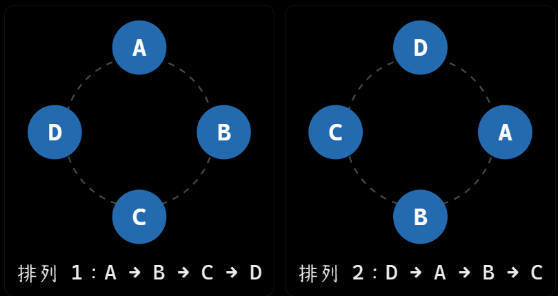

離散數學小考考前總覽
範圍：Ch1.2–1.4、Ch4.1–4.5、Ch5.1–5.2
課本：Ralph P. Grimaldi, Discrete and Combinatorial Mathematics, Fifth Edition
整理日期：2026-10-19
0. 範圍與使用方式
這份總覽把定義、公式適用條件、辨題方法、必要證明、代表題與你的易錯點放在一起。複習順序如下：
- 先讀 §1 必背總表：確認看到題目時知道該用哪一類公式或證明。
- 再讀 §3–§12 各章：每章都有可以直接複習的解釋與作答寫法；不熟的符號查 §2。
- 最後讀 §13 檢核：特別檢查老師提醒的證明、個人錯題及公式條件。
本文件的「必背」是複習優先建議；「老師提示」則另列實際來源。沒有把歷年考古題的所有章節直接當成本次範圍。
0.1 章節導航
| 章節 | 本文件位置 | 主要內容 |
|---|---|---|
| Ch1.2 | §3 | 排列、重複物件、相鄰與不相鄰、環狀排列 |
| Ch1.3 | §4 | 組合、撲克牌、二項式／多項式、係數與恆等式 |
| Ch1.4 | §5 | 重複組合、隔板、上下界、composition、分配與迴圈 |
| Ch4.1 | §6 | 良序原理、一般／強歸納、求和與整除證明 |
| Ch4.2 | §7 | 遞迴數列、函數、集合、初始條件與生成規則 |
| Ch4.3 | §8 | 整除、質數、除法原理、進位表示 |
| Ch4.4 | §9 | GCD、Euclidean Algorithm、Bézout、整數解、LCM |
| Ch4.5 | §10 | 質數引理、算術基本定理、因數計數與個人錯題 |
| Ch5.1 | §11 | 笛卡兒積、關係、空集合、四個分配律 |
| Ch5.2 | §12 | 函數、單射、計數、floor／ceiling、像與限制／延伸 |
範圍補齊： 第三堂逐字稿從 §4.1 跳到 §4.3，但你明確指定 Ch4.1–4.5，因此 §4.2 仍完整保留核心內容。§5.2 後半的 Theorem 5.2、Restriction、Extension 也保留，並標示為範圍補齊。
0.2 老師提醒的證明優先順序
| 要能自己寫出的內容 | 來源與提示強度 | 本文件 |
|---|---|---|
| 用 Well-Ordering Principle 證 Theorem 4.2 | 逐字稿_03_1002.txt 明說會考；網站「打星星」也列入 | §6 |
| Theorem 5.1 的四個分配律，尤其 (a) | 逐字稿_04_1016.txt 第113行補註依課本 p.252 星號確認 | §11.5 |
| \(A\times\varnothing=\varnothing\) | 逐字稿_04_1016.txt 第101–103行提示可打星號 | §11.4 |
| 質數有無窮多個 | 逐字稿_03_1002.txt 說此題常考；103 Quiz-1 也出現 | §8 |
| \(\sum_{k=0}^n\binom nk=2^n\)，以及交錯和 | 逐字稿_02_0918.txt 第23行提醒證明；其中考試稱呼含「期末」，不能據此斷言本次必考 | §4 |
這些題目不能只記結論。要能說出「假設什麼、用什麼定理、矛盾在哪裡／兩個方向如何成立」。重要證明附中文短證明與英文作答框架。
0.3 作答要保留的得分骨架
依附件《給分標準：.txt》，完整得分的要求是：使用當章技巧，過程與答案完整且正確。
- 計數題：先說每個選擇／因子數的是什麼，再列式；分類須互斥且完整。
- 歸納題：明列 Base Case、Induction Hypothesis、Inductive Step 與結論。
- 整除題：使用 \(a\mid b\iff b=ak,\ k\in\mathbb Z\)，需要時交代係數為整數。
- 集合相等題：用完整 \(\iff\) 鏈，或分別證兩個 \(\subseteq\)。
- 函數題：先檢查 Domain、唯一性、Codomain，再檢查是否單射。
1. 考前必背總表
1.1 Counting（計數）四大模型
先問「順序有沒有意義？」再問「同一種類能不能重複？」
| 順序 | 重複 | 從 \(n\) 種選 \(r\) 個的數量 | 典型情境 |
|---|---|---|---|
| 有意義 | 不可 | \(P(n,r)=\dfrac{n!}{(n-r)!}\) | 排名、不同職位、單射 |
| 有意義 | 可 | \(n^r\) | 密碼、固定長度字串、一般函數 |
| 無意義 | 不可 | \(\binom nr=\dfrac{n!}{r!(n-r)!}\) | 選委員、抽一手牌 |
| 無意義 | 可 | \(\binom{n+r-1}{r}\) | 選冰淇淋各口味的數量 |
無重複模型通常要求 \(0\le r\le n\)；重複組合要求 \(n\ge1,\ r\ge0\)。公式中的 \(n,r\) 要先對應題意。
| 其他必背模型 | 公式 |
|---|---|
| 相同物件重複次數為 \(n_1,\ldots,n_k\)，總數 \(n\) | \(\dfrac{n!}{n_1!\cdots n_k!}\) |
| \(n\) 個不同物件排圓圈，旋轉視同、鏡射視異 | \((n-1)!\) |
| \(x_1+\cdots+x_k=N,\ x_i\ge0\) | \(\binom{N+k-1}{k-1}\) |
| \(x_1+\cdots+x_k=N,\ x_i\ge1\) | \(\binom{N-1}{k-1}\)，須 \(N\ge k\) (N+k-1-k = N-1) |
| \(x_i\ge \ell_i\) | 先令 \(y_i=x_i-\ell_i\)，總和改成 \(N-\sum\ell_i\) |
| \(N\) 的恰 \(k\) 項正整數有序 composition | \(\binom{N-1}{k-1}\) (N+k-1-k = N-1) |
| \(N\ge1\) 的任意項數正整數 compositions | \(2^{N-1}\) (很多 1 中間選要不要隔板) |
| 至少一個符合條件 | 常可用「全部－完全沒有」 |
補集、分類加法、分步乘法是方法；不是看到某個英文字就無條件套公式。
圓排列
假設有 4 個不同的人：
\[ A,\ B,\ C,\ D \]
1.1 一般直線排列
如果排成一排：
\[ 4!=4\times3\times2\times1=24 \]
共有 24 種排列。

對 4 個不同物件來說，每種圓排列都會在直線排列中被重複計算 4 次，因此：
\[
\frac{4!}{4}=3!=6
\]
一般化：
\[
\boxed{\frac{n!}{n}=(n-1)!}
\]
也可以理解成：固定其中一個人當基準，剩下 \(n-1\) 個人自由排列，就不用重複計算旋轉的情況。
1.2 Binomial 與 Summation
\[
(x+y)^n=\sum_{k=0}^n\binom nkx^{n-k}y^k.
\]
\[
\begin{aligned}
\binom nr&=\binom n{n-r},\\
\binom nr+\binom n{r+1}&=\binom{n+1}{r+1},\\
\sum_{k=0}^n\binom nk&=2^n,\\
\sum_{k=0}^n(-1)^k\binom nk&=0\quad(n\ge1).
\end{aligned}
\]
\[
\begin{aligned}
\sum_{i=1}^n i&=\frac{n(n+1)}2,\\
\sum_{i=1}^n i^2&=\frac{n(n+1)(2n+1)}6,\\
\sum_{i=1}^n i^3&=\left(\frac{n(n+1)}2\right)^2,\\
\sum_{i=0}^{n-1}ar^i&=
\begin{cases}
a\dfrac{r^n-1}{r-1},&r\ne1,\\
an,&r=1.
\end{cases}
\end{aligned}
\]
若要某一項的 coefficient（係數），先寫 general term（通項）、令冪次等於目標，再代回；係數包含前面所有常數與正負號。
1.3 Number Theory（數論）
\[
\begin{aligned}
a\mid b&\iff b=ak\text{ for some }k\in\mathbb Z,\quad a\ne0,\\
a=bq+r,\quad b>0&:\quad 0\le r<b,\quad q,r\text{ 唯一},\\
\gcd(a,b)&=\gcd(b,a-bq),\\
\gcd(a,b)&=ax+by\quad\text{for some }x,y\in\mathbb Z,\\
ax+by=c\text{ 有整數解}
&\iff\gcd(a,b)\mid c.
\end{aligned}
\]
GCD 的輸入 \(a,b\) 不可同時為 \(0\)；線性方程通解的使用條件與寫法見 §9。
\[
\begin{aligned}
p\text{ 質數},\ p\mid ab&\implies p\mid a\text{ 或 }p\mid b,\\
\gcd(a,b)=1,\ a\mid bc&\implies a\mid c,\\
\gcd(a,b)\operatorname{lcm}(a,b)&=ab\qquad(a,b>0).
\end{aligned}
\]
若
\[
N=p_1^{e_1}\cdots p_t^{e_t}
\]
是質因數分解，則
\[
\begin{aligned}
\#\{\text{正因數}\}&=\prod_{i=1}^t(e_i+1),\\
\#\{\text{完全平方正因數}\}&=\prod_{i=1}^t\left(\left\lfloor\frac{e_i}2\right\rfloor+1\right),\\
\sigma(N)&=\prod_{i=1}^t(1+p_i+\cdots+p_i^{e_i}).
\end{aligned}
\]
質數是大於 \(1\)，且只有 \(1\) 與自身兩個正因數的整數。\(1\) 不是質數。
1.4 Relation 與 Function
設有限非空集合 \(|A|=m,\ |B|=n\)。
| 觀念 | 必背 |
|---|---|
| Cartesian product | \(A\times B=\{(a,b)\mid a\in A,b\in B\}\) |
| 有序對個數 | \(mn\) |
| Relation | \(R\subseteq A\times B\) |
| Relation 個數 | \(2^{mn}\) |
| Function | \(\forall a\in A,\exists!b\in B,\ f(a)=b\) |
| Function 個數 | \(n^m\) |
| Injective | \(f(a_1)=f(a_2)\Rightarrow a_1=a_2\) |
| Injective 個數 | \(P(n,m)\)，若 \(m>n\) 則為 \(0\) |
| Range | \(f(A)\subseteq B\) |
| 空集合 | \(A\times\varnothing=\varnothing\)，但 \(\{\varnothing\}\ne\varnothing\) |
| Floor | \(\lfloor x\rfloor=k\iff k\le x<k+1\) |
1.5 三種證明，先記「起點」
| 證明方式 | 正確起點 | 完成關鍵 |
|---|---|---|
| Mathematical Induction | 驗證最初情況；假設前一步或整段成立 | 真的用假設推出下一步 |
| Proof by Contradiction (反證法) | 假設待證結論的否定 | 推到與假設、定義或已知事實衝突 |
| Set Equality | 任取元素或有序對 | \(\iff\) 到另一集合，或雙向包含 |
本節公式的完整條件、來源和推導分別見後續各章，不必把速記表當作獨立於題意的套公式清單。
2. 必要符號、數系與證明語言
2.1 Number Systems（數系）
| 符號 | English（中文） | 定義／例子 |
|---|---|---|
| \(\mathbb N\) | Natural numbers（自然數） | 本總覽依課本慣例用 \(\{0,1,2,\ldots\}\) |
| \(\mathbb Z^+\) | Positive integers（正整數） | \(\{1,2,3,\ldots\}\) |
| \(\mathbb Z\) | Integers（整數） | \(\{\ldots,-2,-1,0,1,2,\ldots\}\) |
| \(\mathbb Q\) | Rational numbers（有理數） | \(\{a/b\mid a,b\in\mathbb Z,\ b\ne0\}\) |
| \(\mathbb R\setminus\mathbb Q\) | Irrational numbers（無理數） | 不能寫成整數比的實數，例如 \(\sqrt2\) |
| \(\mathbb R\) | Real numbers（實數） | 數線上的數，含有理數與無理數 |
| \(\mathbb C\) | Complex numbers（複數） | \(\{a+bi\mid a,b\in\mathbb R,\ i^2=-1\}\) |
\[ \mathbb N\subseteq\mathbb Z\subseteq\mathbb Q\subseteq\mathbb R\subseteq\mathbb C, \qquad \mathbb Q\cup(\mathbb R\setminus\mathbb Q)=\mathbb R. \]
\(\sqrt2\) 是無理數，也是實數；不是整數。\(3=3/1\) 是有理數。\(\sqrt{-2}\) 不是實數，因此不能作為 \(\mathbb R\to\mathbb R\) 函數的實數輸出。這些區別會直接影響 §12.3 的函數判定。
2.2 集合與邏輯符號
| 符號 | 意義 | 讀法提醒 |
|---|---|---|
| \(x\in A\)、\(x\notin A\) | 是／不是集合元素 | 比較的是「元素與集合」 |
| \(A\subseteq B\) | \(A\) 每個元素都在 \(B\) | 允許 \(A=B\) |
| \(A\subsetneq B\) | 真子集合 | 另要求 \(A\ne B\) |
| \(\varnothing\) | 空集合 | 沒有任何元素 |
| \(\lvert A\rvert\) | Cardinality（基數） | 有限集合時是元素個數，不是數字絕對值 |
| \(\mathcal P(A)\) | Power set（冪集） | 把 \(A\) 的所有子集合收集成一個集合 |
| \(\lvert\mathcal P(A)\rvert=2^{\lvert A\rvert}\) | 有限集合的子集合數 | 每個元素選或不選 |
| \(A\cap B\)、\(A\cup B\) | 交集、聯集 | 對集合操作 |
| \(A-B=A\setminus B\) | 在 \(A\) 而不在 \(B\) 的元素 | 集合差 |
| \(\overline A\) | 相對指定全集 \(U\) 的補集 | \(U\setminus A\)；必須知道全集 |
| \(P\land Q\)、\(P\lor Q\) | AND（且）、OR（或） | 對命題操作；OR 允許兩者都真 |
| \(\neg P\) | NOT（否定） | \(P\) 不成立 |
| \(\forall\) | for every / for all（對所有） | 不能只驗證幾個例子 |
| \(\exists\) | there exists / for some（存在至少一個） | 可以給一個符合要求的例子 |
| \(\exists!\) | there exists exactly one（恰存在一個） | 需同時有存在性與唯一性 |
| \(\Rightarrow\) | implies（推出） | 單方向 |
| \(\iff\) | if and only if（若且唯若） | 兩方向都成立 |
| \(\#S\) | number of elements / objects（數量） | 在本文件中與計數語句連用 |
| \(\{x\mid P(x)\}\) 中的 \(\mid\) | such that（使得／滿足） | 收集所有滿足條件 \(P(x)\) 的 \(x\)；此處不是整除符號 |
不同書籍對單獨的 \(\subset\) 有不同慣例。本文件統一用 \(\subseteq\) 表示允許相等，用 \(\subsetneq\) 表示真包含，避免歧義。
2.3 Summation、Product 與 Interval
\[
\sum_{i=1}^n a_i=a_1+\cdots+a_n,\qquad
\prod_{i=1}^n a_i=a_1a_2\cdots a_n.
\]
上下界決定從哪一項開始、在哪一項停止。\(\sum_{i=0}^n a_i\) 有 \(n+1\) 項；換索引必須連同上下界一起換。
| 區間 | 等價集合 |
|---|---|
| \([a,b]\) | \(\{x\in\mathbb R\mid a\le x\le b\}\) |
| \((a,b)\) | \(\{x\in\mathbb R\mid a<x<b\}\) |
| \([a,b)\) | \(\{x\in\mathbb R\mid a\le x<b\}\) |
| \([3,\infty)\) | \(\{x\in\mathbb R\mid x\ge3\}\) |
\(\infty\) 不是可包含的實數端點，所以無窮端永遠用圓括號。區間代表集合，因此可以寫 \(f([-2,1])\)。
2.4 英文題目常用字
| 題目用語 | 解題時要讀成 |
|---|---|
| at least \(r\) | 至少 \(r\)，\(\ge r\) |
| at most \(r\) / no more than \(r\) | 至多 \(r\)，\(\le r\) |
| exactly \(r\) | 恰好 \(r\) |
| distinct | 彼此不同、可區分 |
| identical / indistinguishable | 相同、不可區分 |
| with repetition | 允許同一種類重複 |
| adjacent / consecutive | 相鄰／連續 |
| expressible as | 可以表示成，例如質數乘積 |
| prove / show | 必須提出一般論證 |
| disprove / counterexample | 用滿足假設但違反結論的反例否定 |
| if and only if | 充分性、必要性都要處理 |
若要證 \(P\Rightarrow Q\)，先假設 \(P\)，再推出 \(Q\)。不能把待證的 \(Q\) 當作已知，推導出一個真式子後就宣布完成。
來源：課本使用的數學記號、§4.1、§5.1–5.2，以及 L03／L04 的符號與數系提醒；本節只補足理解本次範圍所需的語言。
3. Ch1.2 — Permutations（排列）
來源：課本 §1.2，p.6–14；逐字稿_01_0911.txt，第 162–218 行；筆記 L01。加法與乘法原理是本範圍的必要工具。
3.1 先定義「一種結果」，再決定加、乘、除
例如「甲當會長、乙當副會長」與交換職位後是兩種結果；「甲、乙入選委員會」交換列出順序仍是同一種結果。
- 定義完整結果：要記錄人、位置、種類、數量中的哪些資訊？
- Cases（互斥情況）相加：不同 case 不可包含同一結果。
- Stages（構成結果的階段）相乘：每個第一階段結果都有 \(n\) 種後續選擇，第一階段有 \(m\) 種，合計 \(mn\)。
- 檢查重複計數：若每個結果恰好被算 \(q\) 次，才可以除以 \(q\)。
必記：Cases 加；Stages 乘。 不以動作是否「同時發生」判斷加乘。若不同分支的後續選擇數不相同，分 case 計算再加總。
3.2 階乘、排列與四種基本模型
對非負整數 \(n\)，\(0!=1\)；\(n!=n(n-1)\cdots1\)（\(n\ge1\)），且 \((n+1)!=(n+1)n!\)。
| 從 \(n\) 個不同物件／種類取 \(r\) 個 | 順序重要 | 順序不重要 |
|---|---|---|
| 不可重複 | \(P(n,r)=\dfrac{n!}{(n-r)!}\) | \(\binom nr=\dfrac{n!}{r!(n-r)!}\) |
| 可重複、每種供應足夠 | \(n^r\) | \(\binom{n+r-1}{r}\) |
前一列要求整數 \(0\le r\le n\)；後一列取 \(n\ge1,r\ge0\)。可重複時 \(r\) 可以大於 \(n\)。
Permutation（排列）就是有次序的安排。不可重複時依序有 \(n,n-1,\ldots,n-r+1\) 種選擇，所以相乘得 \(P(n,r)\)；\(P(n,0)=1\)、\(P(n,n)=n!\)。
例：10 人選 5 人排成一列拍照，答案是 \(P(10,5)=30,240\)；只選這 5 人，答案是 \(\binom{10}{5}=252\)。arrangement / in a row / positions / first, second 常表示順序重要；仍須以完整結果判斷。
3.3 相同物件、相鄰、不相鄰
相同物件的全排列。 共 \(n\) 個，分為 \(t\) 種，第 \(i\) 種有 \(n_i\) 個，同種不可區分、異種可區分，且
\[
n_1+\cdots+n_t=n,
\qquad
\boxed{\text{排列數}=\frac{n!}{n_1!\cdots n_t!}}.
\]
分母消除同種物件互換造成的重複。必須先數清每種數量；不可只因題目出現「英文單字」就直接用 \(n!\)。
例：MASSASAUGA。 共有 10 個字母，A 有 4 個、S 有 3 個，其餘各 1 個，故全排列 \(10!/(4!3!)=25,200\)。若 4 個 A 必須相鄰，把 AAAA 當 1 個區塊，剩下共 7 個物件，所以 \(7!/3!=840\)。
| 限制 | 方法 | 關鍵檢查 |
|---|---|---|
| 指定物件全相鄰 | Block（綁塊）：當一個物件排 | 區塊內若有不同物件，還要乘內部排列數 |
| 指定物件互不相鄰 | Gap（插空）：先排其他物件，再放進不同空隙 | 線性排列 \(m\) 個物件有 \(m+1\) 個空隙，包含兩端 |
| 至少有某種情況 | Complement（補集）：總數減完全沒有 | 「至少一個」不可隨便先挑一個，再任選其他 |
插空例（108 年 Quiz1 P2／Ex1.2 #15）： 排列 a、b、c、d 和 5 個 e，任何兩個 e 不相鄰。先排 a、b、c、d，有 \(4!\) 種；它們的 5 個空隙各放 1 個 e，因此 \(4!\binom55=24\)。一般有 \(m\) 個其他物件、\(k\) 個相同指定物件時，答案是「其他物件排列數」乘 \(\binom{m+1}{k}\)；若指定物件彼此不同，再乘 \(k!\)。
只取部分重複物件時： 先按各種類「實際取了幾個」分 case。若取出的數量為 \(a_1,\ldots,a_t\)，總共 \(r\) 個，該 case 有 \(r!/(a_1!\cdots a_t!)\) 種；加總所有符合庫存與 \(\sum a_i=r\) 的 case。不能拿原本全部庫存的階乘當分母。
3.4 其他常見排列題
| 題型 | 可直接使用的核心 |
|---|---|
| \(n\) 個不同人坐圓桌，旋轉視為相同 | 固定一人，排其餘人：\((n-1)!\)；左右翻轉通常仍不同 |
| \(m\) 男、\(m\) 女在圓桌交錯坐 | 先固定並環排一性別，再排另一性別：\((m-1)!m!\) |
| 格點路徑，必須走 \(a\) 步右、\(b\) 步上 | 排列 \(a\) 個 R、\(b\) 個 U：\((a+b)!/(a!b!)\)；三方向同理 |
| 指定位數的整數 | 首位不能為 0；若不可重複且有末位限制，先分末位含不含 0 的 case |
| 偶數／5 的倍數／4 的倍數 | 末位為偶數／末位為 0 或 5／末兩位所成整數為 4 的倍數 |
| Palindrome（回文），長度 \(\ell\)、\(n\) 種符號可重複 | 前 \(\lceil\ell/2\rceil\) 個位置決定其餘位置：\(n^{\lceil\ell/2\rceil}\) |
例：6 人圓桌 \(5!=120\)；其中 3 男 3 女交錯有 \(2!3!=12\)。從 \((2,1)\) 走到 \((7,4)\)，只能右或上，共 \(5\) 步右、\(3\) 步上，答案 \(8!/(5!3!)=56\)。有編號座位時不能自行除掉旋轉。
3.5 作業代表：職位限制與菜單計數
Ex1.2 #4：10 位董事中 3 位是醫師，選會長、副會長、秘書、財務各 1 人，同一人不兼任。
| 條件 | 列式與理由 |
|---|---|
| 無限制 | \(P(10,4)=5040\)，四個職位不同 |
| 會長必須是醫師 | \(3P(9,3)=1512\) |
| 恰好 1 位醫師入選 | \(4\cdot3\cdot P(7,3)=2520\)：選醫師職位、選醫師、排非醫師 |
| 至少 1 位醫師入選 | \(P(10,4)-P(7,4)=4200\) |
Ex1.2 #9 的讀題陷阱：8 種 pastry（糕點）、6 種 muffin（瑪芬）合計 14 種 bakery item；咖啡有 4 種，茶有 6 種：原味、加奶油、加糖、奶油加糖、加檸檬、檸檬加糖；另有熱可可、柳橙汁各 1 種。所以飲品口味合計 \(4+6+1+1=12\) 種，另有大中小 3 種尺寸。選 1 個烘焙品和 1 杯中杯飲料：\(14\cdot12=168\)，尺寸已固定，不再乘 3。若為不同的人各買一份，各人的選擇是不同 stage。
來源核對：課本詳解.pdf，p.3–5（PDF 第 7–9 頁）。
3.6 最短排列恆等式證明
題目：整數 \(n,r\ge0\)，若 \(n+1>r\)，證明
\[
P(n+1,r)=\frac{n+1}{n+1-r}P(n,r).
\]
由定義，
\[
P(n+1,r)=\frac{(n+1)!}{(n+1-r)!}
=\frac{n+1}{n+1-r}\frac{n!}{(n-r)!}
=\frac{n+1}{n+1-r}P(n,r).
\]
若題目要證明 \(n!/(m!)^k\) 是整數，其中 \(n=mk\)，可說它是「\(k\) 種物件各 \(m\) 個的不同排列數」，因此為整數。這是 Combinatorial proof（組合證明）：把式子解釋成一個有限集合的大小。
4. Ch1.3 — Combinations 與 Binomial Theorem（組合與二項式定理）
來源：課本 §1.3，p.14–26；逐字稿_01_0911.txt，第 212–214 行；逐字稿_02_0918.txt，第 5–47 行；筆記 L02。
4.1 組合、對稱與互斥分類
Combination（組合）只看選到哪些物件，不計順序。每組 \(r\) 個不同物件有 \(r!\) 種排列，因此
\[
\boxed{\binom nr=C(n,r)=\frac{P(n,r)}{r!}
=\frac{n!}{r!(n-r)!}},\qquad 0\le r\le n.
\]
\[
\binom n0=\binom nn=1,\qquad
\binom n1=n,\qquad
\boxed{\binom nr=\binom n{n-r}}.
\]
最後一式是「選 \(r\) 個」與「留下 \(n-r\) 個」一一對應。對非負整數 \(n\)，選取數超出 \(0,\ldots,n\) 時，計數視為 0。
限制選人例（108 年 Quiz1 P4／Ex1.3 #7）：10 男、10 女選 12 人委員會，令 \(w\) 為女性人數。
| 條件 | 答案 |
|---|---|
| 無限制 | \(\binom{20}{12}\) |
| 6 男 6 女 | \(\binom{10}{6}^2\) |
| 女性人數為偶數 | \(\displaystyle\sum_{w\in\{2,4,6,8,10\}}\binom{10}{w}\binom{10}{12-w}\) |
| 女性多於男性 | \(\displaystyle\sum_{w=7}^{10}\binom{10}{w}\binom{10}{12-w}\) |
| 至少 8 男 | \(\displaystyle\sum_{m=8}^{10}\binom{10}{m}\binom{10}{12-m}\) |
女性至少 2 人，因為只有 10 位男性；必須把現有數量限制放進 case 範圍。若選出的群組有不同名稱／職責，依次選組後相乘；例如 12 本不同書分給 4 個不同孩子、各 3 本，有 \(\binom{12}{3}\binom93\binom63\binom33=12!/(3!)^4\)，孩子有身分，不除 \(4!\)。
4.2 個人重點：撲克牌英文、八種牌型與完整列式
題目（Ex1.3 #8）：從標準 52 張牌中選 5 張。Rank（點數）有 13 種，Suit（花色）有 4 種；每點數 4 張、每花色 13 張。選的是一手牌，不計抽牌順序。
| 小題與中文 | 選擇過程 | 答案 |
|---|---|---|
| (a) Flush（同花）：5 張相同花色 | 選花色，再從該花色選 5 張 | \(4\binom{13}{5}=5148\) |
| (b) Four aces（4 張 A） | 4 張 A 全取，再選 1 張非 A | \(48\) |
| (c) Four of a kind（四條） | 選四條點數，再選其他點數的 1 張 | \(13\cdot48=624\) |
| (d) Three aces and two jacks（3 張 A、2 張 J） | 從 4 張 A 選 3 張、4 張 J 選 2 張 | \(\binom43\binom42=24\) |
| (e) Three aces and a pair（3 張 A 加一對） | 選 3 張 A；選非 A 點數，再選該點數 2 張 | \(\binom43\cdot12\binom42=288\) |
| (f) Full house（葫蘆，三條加一對） | 選三條點數與 3 張；選另一點數與 2 張 | \(13\binom43\cdot12\binom42=3744\) |
| (g) Three of a kind（三條） | 選三條；其餘兩張的點數互異，並選各自花色 | \(13\binom43\binom{12}{2}4^2=54,912\) |
| (h) Two pairs（兩對） | 選兩種點數與各 2 張；單張須來自剩下 11 種點數 | \(\binom{13}{2}\binom42^2\cdot44=123,552\) |
三個必記細節：本題 (a) 已明定「5 張同花色」，所以包含同花順，不能自行減 40。(g) 的其餘兩張不能成對，否則會變葫蘆。(h) 的兩對沒有第一對、第二對的區別，用 \(\binom{13}{2}\)；若用 \(13\cdot12\)，必須除以 \(2!\)。而 (f) 的三條與一對有不同角色，不除 \(2!\)。
已對照：課本 p.24；課本詳解.pdf p.8（PDF 第 12 頁）；筆記 L02「英文看不懂的第 8 題」與「錯題」所附作答。
4.3 「至少」的過度計數陷阱
5 張牌至少 1 張梅花：
\[
\boxed{\binom{52}{5}-\binom{39}{5}}
=\sum_{k=1}^{5}\binom{13}{k}\binom{39}{5-k}.
\]
不能用 \(13\binom{51}{4}\)：同一手含 \(k\) 張梅花的牌，會有 \(k\) 張可當「先選的梅花」，於是被算 \(k\) 次；每手重複次數還不一樣，不能最後統一除某個數。
4.4 Sigma notation（求和記號）
\(\sum_{i=a}^{b}f(i)\) 表示把 \(i=a,a+1,\ldots,b\) 全部代入後相加，共 \(b-a+1\) 項（\(a\le b\)）。Index（索引）名稱可以換，但範圍與被加式必須一起改。
\[
\sum_{i=1}^{n}a_i=\sum_{j=0}^{n-1}a_{j+1},
\qquad
\sum_{i=a}^{b}c=(b-a+1)c,
\qquad
\sum_i cf(i)=c\sum_i f(i).
\]
例如 \(\sum_{i=3}^{7}i=3+4+5+6+7\)，不是從 1 開始；\(\sum_{i=0}^{n}(-1)^i\binom ni\) 的正負號由 index 的奇偶決定。
4.5 Binomial Theorem（二項式定理）與取係數
\[
\boxed{(x+y)^n=\sum_{k=0}^{n}\binom nk x^k y^{n-k}}.
\]
原理：展開 \(n\) 個 \((x+y)\)，每個括號取一項；要得到 \(x^ky^{n-k}\)，只需選哪 \(k\) 個括號取 \(x\)，所以係數是 \(\binom nk\)。
一般 \((ax+by)^n\) 的 \(x^ky^{n-k}\) 係數為
\[
\boxed{\binom nk a^k b^{n-k}}.
\]
例：\((2a-3b)^7\) 中 \(a^5b^2\) 的係數是 \(\binom75 2^5(-3)^2=6048\)。負號屬於 \(-3\)，不能漏掉；要區分「係數 \(6048\)」和「項 \(6048a^5b^2\)」。若項目還有冪次，例如 \((x^2+y^3)^n\)，先解 \(2k=\text{目標的 }x\text{ 指數}\) 與 \(3(n-k)=\text{目標的 }y\text{ 指數}\)；不存在合法整數 \(k\) 時，係數為 0。
4.6 必背證明：二項係數總和與交錯和
課本 Corollary 1.1（p.23）。老師在逐字稿 02 第 23 行提示此類證明可能考；此處視為準備重點，並非本次小考的保證出題清單。
題目 A：對 \(n\ge0\)，證明 \(\sum_{k=0}^{n}\binom nk=2^n\)。
中文短證明：由二項式定理，令 \(x=y=1\)，得
\[
\sum_{k=0}^{n}\binom nk
=\sum_{k=0}^{n}\binom nk1^k1^{n-k}
=(1+1)^n=2^n.
\]
English proof: By the binomial theorem, setting \(x=y=1\) gives
\[
\sum_{k=0}^{n}\binom nk=(1+1)^n=2^n.
\]
題目 B：對 \(n\ge1\)，證明 \(\sum_{k=0}^{n}(-1)^k\binom nk=0\)。
中文短證明：由二項式定理，令 \(x=-1,y=1\)，得
\[
\sum_{k=0}^{n}(-1)^k\binom nk=(-1+1)^n=0.
\]
English proof: By the binomial theorem, setting \(x=-1\) and \(y=1\) gives
\[
\sum_{k=0}^{n}(-1)^k\binom nk=(-1+1)^n=0\qquad(n\ge1).
\]
相加／相減可得：對 \(n\ge1\)，偶數 \(k\) 的組合數總和與奇數 \(k\) 的組合數總和都等於 \(2^{n-1}\)。看到 \(\sum\binom nk a^k b^{n-k}\)，優先認出 \((a+b)^n\)；例如 \(\sum_{k=0}^{n}2^k\binom nk=3^n\)。
4.7 Multinomial Theorem（多項式定理）
在 \((x_1+\cdots+x_t)^n\) 中，若 \(n_i\) 都是非負整數且 \(\sum n_i=n\)，則
\[
\boxed{[x_1^{n_1}\cdots x_t^{n_t}](x_1+\cdots+x_t)^n
=\binom{n}{n_1,\ldots,n_t}
=\frac{n!}{n_1!\cdots n_t!}}.
\]
\([\text{單項式}]F\) 表示「該單項式在 \(F\) 中的係數」。下排逗號只是分開各種類的次數，不是另一種運算；\(\binom{n}{k,n-k}=\binom nk\)。
最短推導：先從 \(n\) 個括號選 \(n_1\) 個取 \(x_1\)，再從剩餘括號選 \(n_2\) 個取 \(x_2\)，依此類推，故
\[
\binom n{n_1}\binom{n-n_1}{n_2}\cdots
\binom{n-n_1-\cdots-n_{t-1}}{n_t}
=\frac{n!}{n_1!\cdots n_t!}.
\]
中間階乘約掉，所以先選哪一類不影響結果。有數值係數時，再乘每個係數的相應次方。
例 1.27(b)：\((a+2b-3c+2d+5)^{16}\) 中 \(a^2b^3c^2d^5\) 的係數：已用 \(2+3+2+5=12\) 個括號，剩下 4 個必須選常數 5，所以
\[
\boxed{\frac{16!}{2!3!2!5!4!}\,2^3(-3)^2 2^5 5^4}.
\]
常數項也佔用括號選擇，不能漏掉 \(4!\) 與 \(5^4\)。若某變數未出現，其指數是 0，分母是 \(0!=1\)。
係數總和：把多項式中所有變數代 1，例如 \((2x-3y+5z)^n\) 的係數總和為 \((2-3+5)^n=4^n\)。這與「相異項數」不同，後者見 5.5。
5. Ch1.4 — Combinations with Repetition（重複組合）
來源：課本 §1.4，p.26–36；逐字稿_02_0918.txt，第 49–243 行；筆記 L02；本節作業代表題並核對 課本詳解.pdf p.12–16（PDF 第 16–20 頁）。附件逐字稿在本節中途結束；composition、迴圈與 runs 以下列課本正文補足。
5.1 Stars and Bars（星星與隔板）：三種等價題目
以下三種題目都是同一個模型：
| 語言 | 對應 |
|---|---|
| \(x_1+\cdots+x_n=r\) 的非負整數解 | \(x_i\) 是第 \(i\) 類分到的數量 |
| 從 \(n\) 種選 \(r\) 個，可重複且不計順序 | 只記每種選幾個 |
| \(r\) 個相同物件放入 \(n\) 個不同容器，可空 | 容器有名稱／編號，同種物件不可區分 |
\(r\) 個星星表示物件，\(n-1\) 個隔板切出 \(n\) 區。因此
\[
\boxed{\#=\frac{(n+r-1)!}{r!(n-1)!}
=\binom{n+r-1}{r}
=\binom{n+r-1}{n-1}}.
\]
條件：整數 \(n\ge1,r\ge0\)，每種供應足夠。隔板可連續、可在首尾，代表某些種類數量為 0；種類的左右順序固定，不能另外排列種類。
餐點例：7 份餐點從 4 種選，餐廳只記各類數量，答案 \(\binom{10}{7}=120\)。若要記住「7 位不同學生各選什麼」，則是 \(4^7\)。差別在一種結果是否包含人的身分。
5.2 下界：先平移，再套公式
若 \(x_1+\cdots+x_n=r\)，各 \(x_i\ge a_i\)，且 \(a_i\) 為整數，令
\[
y_i=x_i-a_i\ge0,
\qquad R=r-\sum_{i=1}^{n}a_i.
\]
新方程為 \(y_1+\cdots+y_n=R\)。\(R<0\) 無解；\(R\ge0\) 時有 \(\boxed{\binom{R+n-1}{n-1}}\) 組解。
| 限制 | 轉換 |
|---|---|
| 每個 \(x_i\ge1\) | 每人先給 1 個：\(\binom{r-1}{n-1}\)，要求 \(r\ge n\) |
| \(x_i\ge-3\) | 令 \(y_i=x_i+3\)，相加總額增加 \(3n\) |
| \(x_i\) 為正偶數 | 令 \(x_i=2y_i\)，其中 \(y_i\ge1\) |
| \(x_i\) 為正奇數 | 令 \(x_i=2y_i+1\)，其中 \(y_i\ge0\) |
轉換後的總額仍須為非負整數，否則無解。
例（108 年 Quiz1 P7）：100 顆相同骰子，六種面各至少出現 3 顆。令 \(x_i\) 為第 \(i\) 面數量，\(\sum x_i=100,x_i\ge3\)；令 \(y_i=x_i-3\)，則 \(\sum y_i=82\)，答案 \(\binom{87}{5}\)。
遇到不同類物品，例如香蕉與橘子，分別滿足各自的總額與下界，各自計數後相乘。7 根相同香蕉、6 顆相同橘子分給 4 個孩子，每人至少 1 根香蕉：\(\binom{6}{3}\binom{9}{3}=1680\)。
5.3 不等式：補一個 Slack variable（剩餘量變數）
非負整數 \(x_i\) 滿足 \(\sum_{i=1}^{n}x_i\le r\)，令 \(s=r-\sum x_i\ge0\)，就得到 \(n+1\) 個非負變數相加為 \(r\)，所以
\[
\boxed{\#(x_1+\cdots+x_n\le r)=\binom{r+n}{n}}.
\]
若是嚴格小於整數 \(r\)，先改為 \(\sum x_i\le r-1\)，故
\[
\boxed{\#(x_1+\cdots+x_n<r)=\binom{r+n-1}{n}}\qquad(r\ge1).
\]
依課堂方法完整寫一次：求 \(x_1+\cdots+x_6<10\) 的非負整數解數。加入 \(x_7>0\)，使 \(x_1+\cdots+x_7=10\)；令 \(y_7=x_7-1\ge0\)，得到 \(x_1+\cdots+x_6+y_7=9\)。因此
\[
\boxed{\binom{9+7-1}{7-1}=\binom{15}{6}=5005}.
\]
每組原解都有唯一剩餘量，因此這個轉換不會多算。個人筆記例 \(x_1+x_2+x_3+x_4<8\) 得 \(\binom{11}{4}=330\)。嚴格小於會少 1；加入 slack 後變數多 1。
5.4 上界、有限庫存與分開方程
一個上界用補集。 例如 \(x_1+x_2+x_3+x_4=10\)，各 \(x_i\ge0\)，且 \(x_1\le3\)。全部有 \(\binom{13}{3}\) 組；違規為 \(x_1\ge4\)，令 \(y_1=x_1-4\) 後總額為 6，違規有 \(\binom93\) 組，所以答案 \(\binom{13}{3}-\binom93\)。若有多個上界，先檢查違規情況有沒有重疊，不能直接一路相減。
冰淇淋例（108 年 Quiz1 P6／Ex1.4 #4）：31 種口味選 12 支，只記各口味數量。
| 限制 | 答案 |
|---|---|
| 每味至多 1 支 | \(\binom{31}{12}\) |
| 每味可選到 12 支 | \(\binom{42}{12}\) |
| 每味至多 11 支 | \(\binom{42}{12}-31\)：只排除全部 12 支同一口味的 31 種 |
兩條方程先相減。 若 \(x_1+\cdots+x_7=37\) 且 \(x_1+x_2+x_3=6\)，各 \(x_i\ge0\)，則 \(x_4+x_5+x_6+x_7=31\)。兩組變數分開計數，答案 \(\binom82\binom{34}{3}\)。
5.4 講解
你這一段其實是在學 Stars and Bars（隔板法）遇到額外限制時，要怎麼調整計算方法。
原本你可能只記得：
\[
\boxed{\binom{n+k-1}{k-1}}
\]
但只要題目多了「最多幾個」、「庫存有限」或「部分變數的總和固定」，就不能直接套用同一個公式。
我會從最基礎開始，依序解釋你總覽中的三種題型。
1. 先複習：Stars and Bars（隔板法）
假設題目：
有 10 顆相同的糖果，要分給 4 個不同的人，每個人可以拿 0 顆，總共有幾種分法？
令 \(x_i\) 表示第 \(i\) 個人拿到的糖果數量。
因此：
\[ x_1+x_2+x_3+x_4=10 \]
而且：
\[ x_1,x_2,x_3,x_4\ge0 \]
例如：
\[ (x_1,x_2,x_3,x_4)=(2,1,3,4) \]
表示四人分別拿到 2、1、3、4 顆。
1.1 為什麼用隔板法？
我們可以使用 10 顆星星（糖果），搭配 3 個隔板（分隔 4 個人）。
10 顆糖果分給 4 個人
第1人
第2人
第3人
第4人
這種排列對應 \(x_1=2,\ x_2=1,\ x_3=3,\ x_4=4\)。
總共要排列的是：
\[
10\text{ 顆星星}+3\text{ 個隔板}=13\text{ 個位置}
\]
從 13 個位置選 3 個放隔板，其餘放星星：
\[
\boxed{\binom{13}{3}=286}
\]
所以一般公式是：
\[
\boxed{ x_1+\cdots+x_k=n,\quad x_i\ge0 \implies \binom{n+k-1}{k-1} }
\]
請先記住：隔板法是在計算非負整數解，而且沒有個別變數的上限限制。
2. 第一種：有上界，用 Complement（補集）
你總覽中的例題：
\[ x_1+x_2+x_3+x_4=10 \]
條件：
\[ x_i\ge0,\qquad x_1\le3 \]
這次跟剛才有什麼不同？
多了一個限制：
第一個人最多只能拿 3 顆糖果。
2.1 為什麼不能直接套公式？
如果直接使用：
\[
\binom{13}{3}=286
\]
這 286 種分法包含：
\[ (4,2,2,2),\quad(5,1,2,2),\quad(10,0,0,0) \]
但這些都違反：
\[ x_1\le3 \]
所以 286 不是最終答案。
2.2 核心策略：全部 − 違規
既然直接計算合法的分法比較麻煩，那就反過來：
\[
\boxed{\text{合法分法}=\text{全部分法}-\text{違規分法}}
\]
全部分法
\(\binom{13}{3}=286\)
違規分法：\(x_1\ge4\)
\(\binom93=84\)
合法分法
202
但是，為什麼違規分法會是 \(\binom93\)？
這才是題目的關鍵。
2.3 如何計算 \(x_1\ge4\) 的違規分法？
原式：
\[ x_1+x_2+x_3+x_4=10 \]
違規條件：
\[ x_1\ge4 \]
這代表第一個人至少拿 4 顆。
因此我們可以先固定分給第一個人 4 顆。
原本有 10 顆，先用掉 4 顆：
\[ 10-4=6 \]
剩下的 6 顆仍然可以分給全部 4 個人，因為第一個人也可能再多拿。
令：
\[ y_1=x_1-4 \]
因為 \(x_1\ge4\)，所以：
\[ y_1\ge0 \]
原方程式變成：
\[ (y_1+4)+x_2+x_3+x_4=10 \]
整理：
\[
\boxed{y_1+x_2+x_3+x_4=6}
\]
現在又是一道標準隔板法題目！
有 6 顆星星、3 個隔板：
\[
\binom{6+4-1}{4-1} =\boxed{\binom93=84}
\]
所以：
\[
\begin{aligned} \text{合法分法} &=\binom{13}{3}-\binom93\\\ &=286-84\\\ &=\boxed{202} \end{aligned}
\]
2.4 為什麼要減 4，而不是減 3？
因為：
\[ x_1\le3 \]
是合法條件。
所以第一個違規值是：
\[ x_1=4 \]
因此違規條件是：
\[ x_1\ge4 \]
上限是 3，違規就從 4 開始。
這點非常容易在考試寫錯。
2.5 換個方式驗證答案
我們也可以直接分類 \(x_1\)：
| \(x_1\) | 其他三人要分的數量 | 分法數 |
|---|---|---|
| 0 | 10 | \(\binom{12}{2}=66\) |
| 1 | 9 | \(\binom{11}{2}=55\) |
| 2 | 8 | \(\binom{10}{2}=45\) |
| 3 | 7 | \(\binom92=36\) |
加起來：
\[
66+55+45+36=\boxed{202}
\]
跟補集法完全一樣。
所以補集不是另外一種神奇公式，只是用比較快的方法，把不能選的情況扣掉。
3. 第二種：有限庫存（冰淇淋題）
現在題目變成：
有 31 種冰淇淋口味，要選出 12 支，只在乎每種口味各選幾支，不在乎選取順序。
假設：
\[
x_i=\text{第 }i\text{ 種口味選了幾支}
\]
所以：
\[
x_1+x_2+\cdots+x\_{31}=12
\]
總共 31 個變數，總和是 12。
這題的重點是：每種口味最多能選幾支？
3.1 情況 A：每種口味最多選 1 支
條件是：
\[
x_i\in\{0,1\}
\]
也就是每種口味只能選或不選。
因此直接從 31 種口味中選出 12 種：
\[
\boxed{\binom{31}{12}}
\]
這是一般 Combination（不重複組合），不是可重複組合。
3.2 情況 B：每種口味最多選 12 支
條件：
\[ 0\le x_i\le12 \]
但注意！
我們總共就只選 12 支：
\[
x_1+\cdots+x\_{31}=12
\]
所以任何一種口味本來就不可能超過 12 支。
因此「每味最多 12 支」其實沒有增加額外限制。
直接用隔板法：
\[
\begin{aligned} \binom{n+k-1}{k-1} &=\binom{12+31-1}{31-1}\\\ &=\binom{42}{30}\\\ &=\boxed{\binom{42}{12}} \end{aligned}
\]
這裡用到組合的對稱性：
\[
\binom{42}{30}=\binom{42}{12}
\]
3.3 情況 C：每種口味最多選 11 支
這個條件和剛才只差 1：
\[ 0\le x_i\le11 \]
但答案會不同。
因為先前的隔板法包含「12 支全部同一口味」的情況。
例如：
\[ (12,0,0,\ldots,0) \]
這表示 12 支全部是第一種口味，現在不合法。
那麼總共有幾種違規情況？
違規：12 支全部同一口味
第 1 種
\((12,0,\ldots,0)\)
…
第 31 種
\((0,\ldots,0,12)\)
31 種口味，各有一種「全選同一味」的違規分法。
每一種口味都可能被選 12 支，因此有：
\[
31\text{ 種違規分法}
\]
所以：
\[
\boxed{\binom{42}{12}-31}
\]
這題很容易錯在以為所有「可重複選」都能直接用隔板法。
記住：隔板法允許某一種口味選到全部 12 支。如果題目禁止，就必須把違規情況排除。
3.4 三種限制比較
| 限制 | 方法 | 答案 |
|---|---|---|
| 每味最多 1 支 | 不重複組合 | \(\binom{31}{12}\) |
| 每味最多 12 支 | 隔板法 | \(\binom{42}{12}\) |
| 每味最多 11 支 | 隔板法 − 違規 | \(\binom{42}{12}-31\) |
4. 第三種：兩條方程式，分開計數
你總覽中的題目：
\[
\begin{cases} x_1+x_2+x_3+x_4+x_5+x_6+x_7=37\\\ x_1+x_2+x_3=6 \end{cases}
\]
且：
\[ x_i\ge0 \]
題目要我們找：有多少組非負整數解，同時滿足這兩條方程式？
4.1 第一步：先把兩條方程相減
已知：
\[ x_1+x_2+x_3=6 \]
但所有 7 個變數加起來是 37：
\[ x_1+\cdots+x_7=37 \]
因此剩下四個變數的總和一定是：
\[ 37-6=31 \]
也就是：
\[
\boxed{x_4+x_5+x_6+x_7=31}
\]
原本看似複雜的兩條方程，變成了兩組互不重疊的變數：
第一組
\(x_1+x_2+x_3=6\)
3 個變數分 6
\(\binom82=28\)
第二組
\(x_4+\cdots+x_7=31\)
4 個變數分 31
\(\binom{34}{3}=5984\)
兩組都要完成，因此相乘
\(\binom82\times\binom{34}{3}\)
4.2 第二步：分別使用隔板法
第一組：
\[ x_1+x_2+x_3=6 \]
有 3 個變數：
\[
\binom{6+3-1}{3-1}=\boxed{\binom82=28}
\]
第二組：
\[ x_4+x_5+x_6+x_7=31 \]
有 4 個變數：
\[
\binom{31+4-1}{4-1}=\boxed{\binom{34}{3}=5984}
\]
4.3 第三步：為什麼要乘，而不是加？
這是 Multiplication Principle（乘法原理）。
想像第一組選到：
\[ (x_1,x_2,x_3)=(1,2,3) \]
第二組可以任意選擇滿足總和 31 的解。
也就是說：
每一種第一組的解，都可以搭配第二組的 5984 種解。
所以：
\[
28\times5984=\boxed{167552}
\]
因此：
\[
\boxed{\binom82\binom{34}{3}=167552}
\]
關鍵：每一組完整的 7 個變數解，都必須同時選定第一組和第二組，因此用乘法，不是加法。
5. 如果有多個上界，為什麼不能一直減？
你原本的筆記有一句：
若有多個上界，先檢查違規情況有沒有重疊，不能直接一路相減。
這是因為可能發生 重複扣除。
例如：
\[ x_1+x_2+x_3=8 \]
條件：
\[ x_1\le3,\qquad x_2\le2 \]
如果有：
\[ x_1=4,\quad x_2=3,\quad x_3=1 \]
這一組解同時違反兩個條件。
當你減掉 \(x_1\ge4\) 的違規分法時，已經把它扣除一次。
如果再減掉 \(x_2\ge3\) 的違規分法，就又把它扣一次。
但它原本只出現一次！
因此需要使用 Inclusion–Exclusion Principle（排容原理）：
\[
\boxed{ \text{合法} =\text{全部}-\text{違規 A}-\text{違規 B} +\text{同時違規 A、B} }
\]
最後加回來，是為了修正被重複扣除的情況。
這個例子實際算起來：
\[
\begin{aligned} \text{全部}&=\binom{10}{2}=45\\\ A:x_1\ge4&\implies\binom62=15\\\ B:x_2\ge3&\implies\binom72=21\\\ A\cap B&\implies\binom32=3 \end{aligned}
\]
所以：
\[
45-15-21+3=\boxed{12}
\]
而且也能直接驗證：\(x_1\) 有 \(0,1,2,3\) 四種選擇，\(x_2\) 有 \(0,1,2\) 三種選擇，\(x_3=8-x_1-x_2\) 都非負，因此是 \(4\times3=12\) 種。
6. 考前如何快速判斷這三種題型？
| 題目特徵 | 解題方法 |
|---|---|
| \(x_1+\cdots+x_k=n,\ x_i\ge0\) | 直接 Stars and Bars |
| 額外要求 \(x_1\le m\) | 全部 − \(x_1\ge m+1\) 的分法 |
| 每種物品最多選 1 個 | 普通 Combination |
| 每種物品最多選到總數 \(n\) | 直接 Stars and Bars |
| 每種物品最多選 \(n-1\) 個 | 全部 − 所有物品同一種的情況 |
| 有多個上界 | 檢查違規是否重疊，必要時用排容原理 |
| 兩組不重疊變數的總和各自固定 | 分別 Stars and Bars，再相乘 |
7. 小測驗：確認你是否理解
1. 有 8 顆相同糖果分給 3 個人，每個人可以拿 0 顆，總共有幾種分法？
\(\binom{10}{2}\)
\(\binom83\)
\(3^8\)
2. 若再要求第一個人最多拿 2 顆，違規情況應該設定成？
\(x_1\ge2\)
\(x_1\ge3\)
\(x_1\le3\)
3. 若兩組不重疊的變數，各自有 10 種和 6 種合法解，兩組都要成立，總共幾種？
16 種
60 種
4 種
這一節你最需要掌握的不是更多公式，而是辨認「哪一些分法已經被公式算進去，但題目其實不允許」。 理解這件事，上界限制、有限庫存和補集計數就會容易很多。
5.5 不同書上書架、展開項數
\(N\) 本不同書放上 \(k\) 個不同書架，每架至少一本且架內順序重要：先把書排成一列，有 \(N!\) 種；在相鄰書之間的 \(N-1\) 個空隙選 \(k-1\) 個切開，所以
\[
\boxed{N!\binom{N-1}{k-1}}\qquad(N\ge k\ge1).
\]
若允許空書架，先選每架非負本數，有 \(\binom{N+k-1}{k-1}\) 種，再依指定本數切開已排好的書，答案 \(N!\binom{N+k-1}{k-1}\)。書不同且架內要排列，所以不能只寫星星隔板的數量。
\((x_1+\cdots+x_t)^n\) 展開後的相異項數：每項對應唯一非負指數組合 \(n_1+\cdots+n_t=n\)，故
\[
\boxed{\text{相異項數}=\binom{n+t-1}{t-1}}.
\]
例：\((w+x+y+z)^{10}\) 有 \(\binom{13}{3}=286\) 個相異項；係數總和則為 \(4^{10}\)。此項數公式適用於這種獨立變數的和；換成彼此有關的單項式時，要留意展開後合併同類項。
5.5 講解
這段其實是在講 Multinomial Theorem（多項式定理）和 Stars and Bars（隔板法）的結合。
你只要先搞懂一件事：
「相異項數」和「係數總和」是完全不同的東西。
我從簡單例子開始解釋，最後再回到 \((w+x+y+z)^{10}\)。
1. 什麼是「相異項數」？
先看簡單的二項式：
\[ (a+b)^3 \]
展開：
\[
\begin{aligned}
(a+b)^3 &= a^3+3a^2b+3ab^2+b^3
\end{aligned}
\]
我們觀察兩件事：
| 項目 | 結果 |
|---|---|
| 相異項（Distinct Terms） | \(a^3,a^2b,ab^2,b^3\) |
| 相異項數 | 4 項 |
| 係數 | \(1,3,3,1\) |
| 係數總和 | \(1+3+3+1=8\) |
注意：
\[
\boxed{\text{相異項數}=4}
\]
\[
\boxed{\text{係數總和}=8}
\]
例如 \(3a^2b\)：雖然它的係數是 3，但它仍然只算一個相異項。
所以：
- 相異項數：只看有哪些不同的變數次方組合。
- 係數總和：把每項前面的數字全部相加。
2. 為什麼相異項數能用隔板法？
現在回到：
\[
(w+x+y+z)^{10}
\]
這表示有 10 個括號：
\[ (w+x+y+z)\cdots(w+x+y+z) \]
展開時，每個括號都必須選一個變數出來相乘。
假設我們想得到：
\[
\boxed{w^2x^3y^1z^4}
\]
意思是：
| 變數 | 從幾個括號選它 |
|---|---|
| \(w\) | 2 |
| \(x\) | 3 |
| \(y\) | 1 |
| \(z\) | 4 |
| 合計 | 10 |
所以：
\[ 2+3+1+4=10 \]
不管選取括號的順序如何，只要最後指數是 \((2,3,1,4)\)，就會得到同一個相異項。
2.1 把問題變成方程式
令：
\[
\begin{aligned}
n_1 &= w\text{ 的指數} \\
n_2 &= x\text{ 的指數} \\
n_3 &= y\text{ 的指數} \\
n_4 &= z\text{ 的指數}
\end{aligned}
\]
因為我們總共選了 10 個變數，所以：
\[
\boxed{n_1+n_2+n_3+n_4=10}
\]
並且：
\[ n_1,n_2,n_3,n_4\ge0 \]
這是不是很眼熟？它就是你之前學過的隔板法！
2.2 用 10 顆星星、3 個隔板表示
例如指數組合：
\[ (2,3,1,4) \]
可以表示成：
** | *** | * | ****
w² x³ y¹ z⁴
10 顆星星分成 4 組，對應 4 個變數的指數。
星星總數是 10，隔板總數是 3，因此共有 \(10+3=13\) 個位置。
從 13 個位置選 3 個放隔板：
\[
\begin{aligned}
\text{相異項數} &= \binom{13}{3} \\
&= \frac{13!}{3!10!} \\
&= \boxed{286}
\end{aligned}
\]
為什麼這樣就算出了相異項數？
因為每一種隔板排列，都唯一對應一組指數：
\[ (n_1,n_2,n_3,n_4) \]
而每一組指數，也都唯一對應一個相異項：
\[
w^{n_1}x^{n_2}y^{n_3}z^{n_4}
\]
所以只要算出有幾組非負整數解，就知道展開後有幾個相異項。
3. 為什麼係數總和卻是 \(4^{10}\)？
這裡要用到一個很好記的技巧：
想求多項式展開後的係數總和，就把所有變數代成 1。
例如：
\[ (a+b)^3=a^3+3a^2b+3ab^2+b^3 \]
令 \(a=b=1\)，則：
\[ (1+1)^3=1+3+3+1=8 \]
因此係數總和是 8。
3.1 套用到原題
\[
(w+x+y+z)^{10}
\]
令 \(w=x=y=z=1\)，就得到：
\[
\begin{aligned}
(1+1+1+1)^{10} &= 4^{10} \\
&= \boxed{1,048,576}
\end{aligned}
\]
所以：
| 項目 | 結果 | 意義 |
|---|---|---|
| 相異項數 | 286 | 不同的指數組合數 |
| 係數總和 | 1,048,576 | 所有項的係數加總 |
這兩個數字差這麼多，是因為某一個相異項可能由很多種選取括號的方式產生。
例如剛才的 \(w^2x^3yz^4\)，它的係數是：
\[
\frac{10!}{2!3!1!4!}=12600
\]
雖然有 12,600 種選法可以產生這個單項式，但合併同類項後，它仍然只算 1 個相異項。
4. 一般公式怎麼來？
假設：
\[ (x_1+x_2+\cdots+x_t)^n \]
其中有 \(t\) 個不同且獨立的變數，總次方為 \(n\)。
任何一個相異項都可以寫成：
\[
x_1^{n_1}x_2^{n_2}\cdots x_t^{n_t}
\]
而指數必須滿足：
\[ n_1+n_2+\cdots+n_t=n \]
所以根據隔板法：
\[
\boxed{\text{相異項數}=\binom{n+t-1}{t-1}}
\]
另一方面，令所有變數等於 1：
\[
\boxed{\text{係數總和}=t^n}
\]
因此記住這個表格：
| 題目問什麼 | 使用公式 |
|---|---|
| 展開後有幾個相異項？ | \(\displaystyle\binom{n+t-1}{t-1}\) |
| 展開後係數總和？ | \(t^n\) |
| 某個指定單項式的係數？ | \(\displaystyle\frac{n!}{n_1!n_2!\cdots n_t!}\) |
這裡第三個公式適用於括號內各變數的係數都是 1 的情況；若有 \(2x\)、\(-3y\) 等，還要乘上它們各自的數字係數次方。
5. 最後一句「彼此有關的單項式」是什麼意思？
例如：
\[ (x+x^2+x^3)^2 \]
如果把 \(x,x^2,x^3\) 當作三種獨立變數，公式會算出：
\[
\binom{2+3-1}{3-1}=\binom42=6
\]
但實際展開：
\[ (x+x^2+x^3)^2=x^2+2x^3+3x^4+2x^5+x^6 \]
只有 5 個相異項。
因為：
\[ x\cdot x^3=x^4,\qquad x^2\cdot x^2=x^4 \]
這兩種選法得到相同的 \(x^4\)，需要合併同類項。
因此這個隔板公式不能直接套用到任何多項式，而是要確認每組指數選擇會產生不同的單項式。
6. 考前最短記憶法
看到 \((w+x+y+z)^{10}\)，先問自己題目要求什麼：
- 相異項數：10 次分配給 4 個變數，等同隔板法，得到 \(\binom{13}{3}=286\)。
- 係數總和：所有變數代入 1，得到 \(4^{10}\)。
- 指定項係數：例如 \(w^2x^3yz^4\)，用 Multinomial Coefficient，得到 \(\frac{10!}{2!3!1!4!}\)。
你只要記住「相異項數是在分配指數」，就會知道為什麼可以用隔板法，而不是死背一個新的公式。
5.6 Composition（有序整數拆解）
把正整數 \(N\) 寫成若干正整數加數的和，且順序重要，稱為 composition。Summand（加數）就是相加的每一項；\(2+1+3\) 的 summands 是 2、1、3。\(3+1\) 與 \(1+3\) 是不同 composition。
| 要數什麼 | 公式與條件 |
|---|---|
| \(N\) 的所有 compositions | \(\boxed{2^{N-1}}\)，\(N\ge1\) |
| 恰有 \(k\) 個正整數加數 | \(\boxed{\binom{N-1}{k-1}}\)，\(1\le k\le N\) |
| 每個加數都是正整數 \(d\) 的倍數 | \(d\mid N\) 時為 \(\boxed{2^{N/d-1}}\)；否則 0 |
| 每個加數都是 \(d\) 的倍數，且恰有 \(k\) 項 | \(d\mid N\) 且 \(N/d\ge k\) 時為 \(\binom{N/d-1}{k-1}\) |
原理：把 \(N\) 看成一列 \(N\) 個 1，有 \(N-1\) 個空隙。每隙選切／不切，共 \(2^{N-1}\) 種；恰好 \(k\) 段就選 \(k-1\) 個切點。若每項為 \(d\) 的倍數，每項除以 \(d\)，便與 \(N/d\) 的 compositions 一一對應。
個人筆記校正：8 拆成恰好 3 個正整數，是 \(\boxed{\binom72=21}\)；\(\binom73=35\) 對應恰好 4 個正整數。不要把「加號數／切點數」當成「加數數量」。7 拆成 3 個正整數則有 \(\binom62=15\)。
Ex1.4 #25–26：20 的每個 summand 都是偶數，除以 2 後是 10 的 composition，得 \(2^9=512\)；若每項是 4 的倍數，得 \(2^4=16\)。一般 \(N=md\) 時，答案 \(2^{m-1}\)。
Partition（整數分割）不計加數順序，所以 \(3+1\) 與 \(1+3\) 相同；不能用 \(2^{N-1}\)。例如 4 的 compositions 有 8 種，而 partitions 只有 \(4,3+1,2+2,2+1+1,1+1+1+1\) 這 5 種。
5.6 講解
這一節 5.6 Composition（有序整數拆解），其實就是把你前面學過的 Stars and Bars（隔板法）用在「將一個正整數拆成幾個正整數相加」的問題上。
這裡有四個公式，但它們全部都可以從同一個原理推導出來：
把 \(N\) 個 1 排成一列，在中間決定哪些位置要切開。
我會從最基本的例子開始，逐步解釋四個公式，再講你筆記中的 Ex1.4 #25–26。
1. Composition 到底是什麼？
假設題目問：
將正整數 4 拆成若干個正整數相加，有幾種方法？
這裡有三個條件：
- 每個加數（Summand）都必須是正整數，不能是 0。
- 加數的順序重要。
- 沒有規定要拆成幾個加數。
因此 4 的所有 Compositions 是：
| 加數數量 | 拆解方式 | 種數 |
|---|---|---|
| 1 個 | \(4\) | 1 |
| 2 個 | \(1+3,\ 2+2,\ 3+1\) | 3 |
| 3 個 | \(1+1+2,\ 1+2+1,\ 2+1+1\) | 3 |
| 4 個 | \(1+1+1+1\) | 1 |
| 總計 | 8 |
特別注意：\(1+3\) 與 \(3+1\) 是不同的 Composition。雖然加總結果都是 4，但在 Composition 中，順序不同就算不同的方法。
2. 第一個公式：\(N\) 的所有 Compositions
\[
\boxed{2^{N-1}}
\]
2.1 為什麼？
假設 \(N=4\)，我們把 4 寫成：
\[ 1\quad1\quad1\quad1 \]
中間有三個空隙：
\[ 1\ \square\ 1\ \square\ 1\ \square\ 1 \]
每個空隙可以：
- 切開（變成兩個加數）。
- 不切開（合併成一個加數）。
例如下面幾種切法；| 表示切開，連在一起的 1 合併成一個加數：
| 切法 | 對應的 Composition | 切點數 | 加數數量 |
|---|---|---|---|
1111（全部不切開） |
\(4\) | 0 | 1 |
| \(1\mid111\) | \(1+3\) | 1 | 2 |
| \(11\mid11\) | \(2+2\) | 1 | 2 |
| \(1\mid1\mid11\) | \(1+1+2\) | 2 | 3 |
| \(1\mid1\mid1\mid1\)（全部切開） | \(1+1+1+1\) | 3 | 4 |
因為 4 個 1 有 3 個空隙，每個空隙有 2 種選擇：
\[ 2\times2\times2=2^3=8 \]
推廣到 \(N\)：
\[
\underbrace{1\quad1\quad\cdots\quad1}_{N\text{ 個}}
\]
會有 \(N-1\) 個空隙，所以：
\[
\boxed{\text{所有 Compositions}=2^{N-1}}
\]
重點：這個公式是在「沒有指定要拆成幾個加數」時使用。
3. 第二個公式：恰好有 \(k\) 個正整數加數
\[
\boxed{\binom{N-1}{k-1}}
\]
3.1 為什麼是 \(k-1\)？
因為要把一排東西分成 \(k\) 段，只需要 \(k-1\) 個切點。
例如：
| 要拆成幾個加數 | 需要的切點 |
|---|---|
| 1 個 | 0 |
| 2 個 | 1 |
| 3 個 | 2 |
| 4 個 | 3 |
因此，要把 \(N\) 拆成恰好 \(k\) 個正整數，就從 \(N-1\) 個空隙中選出 \(k-1\) 個位置切開：
\[
\boxed{\binom{N-1}{k-1}}
\]
3.2 例題：8 拆成恰好 3 個正整數
先排出 8 個 1：
\[ 1\quad1\quad1\quad1\quad1\quad1\quad1\quad1 \]
總共有 7 個空隙。因為要拆成 3 個正整數，所以需要 2 個切點。
例如：
\[
\underbrace{1+1}_{2}\quad\Big|\quad
\underbrace{1+1+1}_{3}\quad\Big|\quad
\underbrace{1+1+1}_{3}
\]
對應：
\[ 2+3+3=8 \]
每一種選擇兩個切點的方式，都會得到一種不同的 Composition。因此：
\[
\begin{aligned}
\text{方法數} &= \binom{8-1}{3-1} \\
&= \binom72 \\
&= \frac{7!}{2!5!} \\
&= \boxed{21}
\end{aligned}
\]
3.3 為什麼不是 \(\binom73=35\)？
因為 \(\binom73\) 是從 7 個空隙選 3 個切點。3 個切點會分成 4 個加數。
也就是 \(\binom73=35\) 是在回答「8 拆成恰好 4 個正整數」，不是 3 個。
這就是你個人筆記特別提醒的錯誤：
\[
\boxed{\text{加數數量}=\text{切點數量}+1}
\]
4. 第三個公式：每個加數都必須是 \(d\) 的倍數
現在進入比較容易搞混的地方。公式：
\[
\boxed{2^{N/d-1}}
\]
但前提是：
\[
\boxed{d\mid N}
\]
其中 \(d\mid N\) 的意思是：\(N\) 可以被 \(d\) 整除。
4.1 例題：把 20 拆成若干個偶數相加
也就是：
每個 Summand 都必須是 2 的倍數。
合法的 Composition 例如：
\[
\begin{aligned}
&20 \\
&2+18 \\
&4+16 \\
&2+6+12 \\
&2+2+2+2+2+2+2+2+2+2
\end{aligned}
\]
但 \(3+17\) 不合法，因為 3 和 17 都不是偶數。
4.2 核心技巧：每個加數都除以 2
假設原本的一種拆法是：
\[ 4+6+10=20 \]
因為每個加數都是 2 的倍數，所以全部除以 2：
\[ 2+3+5=10 \]
再舉幾個例子：
| 20 的偶數 Composition | 全部除以 2 |
|---|---|
| \(20\) | \(10\) |
| \(2+18\) | \(1+9\) |
| \(4+6+10\) | \(2+3+5\) |
| \(2+2+16\) | \(1+1+8\) |
| \(10+10\) | \(5+5\) |
你有沒有發現？20 的每一種偶數 Composition，都可以唯一對應到 10 的一種普通 Composition。
而且反過來，只要將 10 的每個加數乘以 2，就能得到 20 的偶數 Composition。所以兩者方法數完全相同！
因此原題其實等價於：「10 可以拆成多少種有序正整數加總？」
直接用第一個公式：
\[
\begin{aligned}
2^{10-1} &= 2^9 \\
&= \boxed{512}
\end{aligned}
\]
4.3 如果每個加數都要是 4 的倍數呢？
同樣是把 20 拆開，但這次每項必須是 \(4,\ 8,\ 12,\ 16,\ 20,\ldots\)。
例如：
\[ 4+4+12=20 \]
每項除以 4：
\[ 1+1+3=5 \]
於是問題轉換成：「5 有多少種普通 Composition？」所以：
\[
\begin{aligned}
2^{20/4-1} &= 2^{5-1} \\
&= 2^4 \\
&= \boxed{16}
\end{aligned}
\]
4.4 為什麼一定要 \(d\mid N\)？
假設題目改成：「19 拆成若干個偶數相加。」
所有偶數相加，結果仍然是偶數。但 19 是奇數，因此根本不可能！
\[
\boxed{\text{方法數}=0}
\]
所以必須先確認 \(d\mid N\)，才可以使用 \(2^{N/d-1}\)。
5. 第四個公式：每項是 \(d\) 的倍數，而且恰好 \(k\) 項
這就是把前面第二、第三個公式結合起來。
\[
\boxed{\binom{N/d-1}{k-1}}
\]
條件是：
\[ d\mid N,\qquad 1\le k\le N/d \]
5.1 例題：把 20 拆成恰好 3 個 4 的倍數
例如：
\[
\begin{aligned}
&4+4+12 \\
&4+8+8 \\
&8+4+8
\end{aligned}
\]
這三種都合法，而且因為順序重要，它們是不同的 Composition。
Step 1：全部除以 4
因為每項都是 4 的倍數：
\[
\frac{20}{4}=5
\]
所以題目等價於：「將 5 拆成恰好 3 個正整數。」
Step 2：套用固定 \(k\) 項的公式
\[
\begin{aligned}
\binom{5-1}{3-1} &= \binom42 \\
&= \boxed{6}
\end{aligned}
\]
Step 3：實際列出來驗證
| 5 的 Composition | 乘回 4 |
|---|---|
| \(1+1+3\) | \(4+4+12\) |
| \(1+3+1\) | \(4+12+4\) |
| \(3+1+1\) | \(12+4+4\) |
| \(1+2+2\) | \(4+8+8\) |
| \(2+1+2\) | \(8+4+8\) |
| \(2+2+1\) | \(8+8+4\) |
總共剛好 6 種。
所以你現在應該能理解：每項必須是 \(d\) 的倍數 → 先將總和除以 \(d\)；恰好 \(k\) 項 → 再從空隙選 \(k-1\) 個切點。
6. Composition 和 Partition 差在哪裡？
這也是重要的英文名詞差異。
| 比較項目 | Composition | Partition |
|---|---|---|
| 中文 | 有序整數拆解 | 整數分割 |
| 順序重要嗎？ | 重要 | 不重要 |
| \(1+3\) 和 \(3+1\) | 兩種 | 同一種 |
| 4 的總方法數 | 8 | 5 |
| 通用公式 \(2^{N-1}\) | 適用 | 不適用 |
例如 4 的 Partition：
\[
\begin{aligned}
&4 \\
&3+1 \\
&2+2 \\
&2+1+1 \\
&1+1+1+1
\end{aligned}
\]
共有 \(\boxed{5}\) 種。
但 Composition 必須把不同順序分開算，例如 \(3+1\) 與 \(1+3\)，所以一共有 8 種。
注意：Partition 並不是把 Composition 的數量直接除以階乘，因為加數可能重複，例如 \(2+2\) 交換順序後沒有新的排列。
7. 四個公式最終整理
| 題目條件 | 公式 |
|---|---|
| 任意個正整數加數 | \(\displaystyle 2^{N-1}\) |
| 恰好 \(k\) 個正整數加數 | \(\displaystyle\binom{N-1}{k-1}\) |
| 每個加數是 \(d\) 的倍數 | \(\displaystyle 2^{N/d-1}\) |
| 每個加數是 \(d\) 的倍數，而且恰好 \(k\) 項 | \(\displaystyle\binom{N/d-1}{k-1}\) |
後兩個公式要求 \(d\) 是正整數且 \(d\mid N\)；第四個還要求 \(1\le k\le N/d\)。不符合條件時，方法數為 0。
考試可以用這個判斷流程：
- 題目：把 \(N\) 拆成正整數加數，順序重要。
- 每項必須是 \(d\) 的倍數嗎？有 → 確認 \(d\mid N\)，令 \(M=N/d\)；沒有 → \(M=N\)。
- 有沒有指定恰好 \(k\) 項？
| 項數條件 | 方法數 |
|---|---|
| 沒有指定 | \(\boxed{2^{M-1}}\) |
| 恰好 \(k\) 項 | \(\boxed{\binom{M-1}{k-1}}\) |
此流程的前提是 \(M\) 為正整數；指定 \(k\) 時還必須有 \(1\le k\le M\)。
8. 來做三題，確認你真的懂了
1. 把 8 拆成恰好 3 個正整數，有多少種 Composition？
- A. \(\binom73=35\)
- B. \(\binom72=21\)
- C. \(2^7=128\)
2. 將 12 拆成若干個正偶數相加，有多少種 Composition？
- A. \(2^{11}=2048\)
- B. \(2^6=64\)
- C. \(2^5=32\)
3. 將 12 拆成恰好 2 個正偶數相加，有多少種 Composition？
- A. 5 種
- B. 6 種
- C. 10 種
整節最重要只要記住兩個原理：
- 拆成幾項？不限項數就是每個空隙自由切或不切；指定 \(k\) 項就是選 \(k-1\) 個切點。
- 每項有沒有倍數限制？有的話，先把每個加數和總和一起除以 \(d\)，再用同樣的方法計算。
這樣四個公式就不需要分別死背了。
5.7 Nested for loop（巢狀迴圈）計數
先把每次執行對應到一組 index。to／downto 在本課虛擬碼均含兩端，例如 5 到 10 是 \(10-5+1=6\) 次。
for i = 1 to 20
for j = 1 to i
for k = 1 to j
print(...)
合法 index 滿足 \(1\le k\le j\le i\le20\)。這是從 20 種數值選 3 個、可重複、固定成非遞減順序，所以
\[
\boxed{\#\text{print}=\binom{20+3-1}{3}=\binom{22}{3}=1540}.
\]
星星不是數值本身，而是「選了一次」。 選到 \((k,j,i)=(3,3,5)\) 表示 3 選兩次、5 選一次；令 \(c_v\) 表示數值 \(v\) 被選幾次，則 \(c_1+\cdots+c_{20}=3\)。因此是 3 顆星、19 個隔板；20 是可選數值種類數，並不是 \(i+j+k\) 的總和。
| index 範圍 | 次數 |
|---|---|
| \(r\) 層，各自獨立由 1 到 \(n\) | \(n^r\) |
| \(1\le i_1\le\cdots\le i_r\le n\) | \(\binom{n+r-1}{r}\) |
| \(1\le i_1<\cdots<i_r\le n\) | \(\binom nr\) |
| \(1\le j\le i\le n\) | \(\binom{n+1}{2}=n(n+1)/2\) |
順排迴圈相加、巢狀迴圈按依賴關係計數。 Ex1.2 #28 是三個先後執行的迴圈，分別執行 12、6、8 次，每次加 1、2、3，所以最後 counter 為 \(0+12(1)+6(2)+8(3)=48\)。若同樣三段範圍改為彼此獨立的三層巢狀，最內層執行 \(12\cdot6\cdot8=576\) 次。若每次增加量不是 1，還要加總增加量，不能把執行次數直接當最終值。
5.8 Run（極大連續同符號區塊）
Run 是不能再向左右延長的同符號連續區塊，例如 0011100 有三個 run：00、111、00。一個 run 的長度必須為正，不能為 0。
計算固定 0、1 數量及 run 數時：先決定起始符號，算兩種符號各有幾個 run，再把各符號總數拆成對應個數的正整數，最後相乘；不同起始符號的 case 相加。
例 1.41：10 個 O、5 個 E 排列成 7 個 runs。
- E 開頭也 E 結尾：4 個 E-runs、3 個 O-runs，有 \(\binom{5-1}{4-1}\binom{10-1}{3-1}=4\cdot36=144\) 種。
- O 開頭也 O 結尾：4 個 O-runs、3 個 E-runs，有 \(\binom{10-1}{4-1}\binom{5-1}{3-1}=84\cdot6=504\) 種。
總數 \(\boxed{144+504=648}\)。只有兩種符號時，奇數 runs 的首尾同符號；偶數 runs 的首尾不同。
片段 01 出現次數（Ex1.4 #28）：長度 \(n\) 的二進位字串，恰好含 \(r\) 次 01（\(n,r\) 為非負整數，且 \(n\ge2r\)），可寫成「可空的開頭 1 區塊、交錯的 \(r\) 對正長度 0 與 1 區塊、可空的結尾 0 區塊」。中間 \(2r\) 區塊各先放 1 個符號，剩下 \(n-2r\) 個分到 \(2r+2\) 區塊，因此有 \(\boxed{\binom{n+1}{2r+1}}\) 種。這裡數的是相鄰位置的 0 到 1 轉換，不是 0 或 1 的數量。
5.8 講解
這一節 5.8 Run（極大連續同符號區塊），其實就是把你剛學的 Composition（有序整數拆解）用在 0、1 字串，或 O、E 的排列問題上。
這裡有兩種題型：
- 固定 Run 數量：例如 10 個 O、5 個 E，要排成剛好 7 個 Runs。
- 固定
01出現次數：例如長度為 \(n\) 的二進位字串，恰好出現 \(r\) 次01。
兩種題型都會用到：
\[
\boxed{\text{將 }N\text{ 拆成恰好 }k\text{ 個正整數的方法數}=\binom{N-1}{k-1}}
\]
差別在於我們要先搞清楚「有幾個區塊」。
1. Run 到底是什麼？
Run 就是一段連續、相同的符號，而且不能再往左或往右延長。
例如 0011100 可以分成：
00 | 111 | 00
共有 3 個 Runs。為什麼是 3 個？
| Run | 符號 | 長度 |
|---|---|---|
| 第 1 個 | 00 |
2 |
| 第 2 個 | 111 |
3 |
| 第 3 個 | 00 |
2 |
注意：
- 相鄰的兩個 Runs，一定是不同符號。
- 每個 Run 至少包含一個符號，因此長度必須 \(\ge1\)。
- 同一種符號可以出現在不同的 Runs，例如開頭和結尾都有
00。
最容易搞錯：Run 不是在數有幾個 0、幾個 1，而是在數有幾段連續相同的符號。
2. 為什麼 Run 會用到 Composition？
假設有 5 個 E，要拆成 3 個 E-runs。意思是每個 E-run 都至少要有一個 E，三段 E-run 的總長度是 5。
例如：
\[
\underbrace{E}_{1}\quad\underbrace{EEE}_{3}\quad\underbrace{E}_{1}
\]
三個區塊長度是 \(1+3+1=5\)，因此變成：
\[ e_1+e_2+e_3=5,\qquad e_i\ge1 \]
這不就是你前面學的「5 拆成恰好 3 個正整數」嗎？
\[
\boxed{\binom{5-1}{3-1}=\binom42=6}
\]
六種分法是：
\[
\begin{gathered}
1+1+3,\quad1+3+1,\quad3+1+1 \\
1+2+2,\quad2+1+2,\quad2+2+1
\end{gathered}
\]
所以只要知道某種符號要分成幾個 Runs，就可以用 Composition 公式計算每段的長度安排。
3. 例 1.41：10 個 O、5 個 E，排成剛好 7 個 Runs
題目給我們：
\[
\underbrace{O,O,\ldots,O}_{10\text{ 個}}\qquad
\underbrace{E,E,\ldots,E}_{5\text{ 個}}
\]
要排出一個長度 15、剛好有 7 個 Runs 的序列。
3.1 為什麼要分成兩種 Case？
因為只有 O 和 E 兩種符號，所以相鄰 Runs 必須交替：
\[ O\to E\to O\to E\to\cdots \]
7 是奇數，因此開頭與結尾一定是同一種符號。只有兩種可能：
| Case | Runs 的符號順序 | 區塊數 |
|---|---|---|
| Case 1：E 開頭，也 E 結尾 | \(E\mid O\mid E\mid O\mid E\mid O\mid E\) | 4 個 E-runs、3 個 O-runs |
| Case 2：O 開頭，也 O 結尾 | \(O\mid E\mid O\mid E\mid O\mid E\mid O\) | 4 個 O-runs、3 個 E-runs |
這裡每個 O 或 E 代表一整段 Run，不是只有一個 O 或 E。
3.2 Case 1：E 開頭、E 結尾
Runs 的順序固定為：
\[ E\mid O\mid E\mid O\mid E\mid O\mid E \]
所以需要：
- 10 個 O，分成 3 個非空 O-runs。
- 5 個 E，分成 4 個非空 E-runs。
先算 O：
\[ o_1+o_2+o_3=10,\qquad o_i\ge1 \]
使用 Composition：
\[
\binom{10-1}{3-1}=\binom92=\boxed{36}
\]
再算 E：
\[ e_1+e_2+e_3+e_4=5,\qquad e_i\ge1 \]
\[
\binom{5-1}{4-1}=\binom43=\boxed{4}
\]
為什麼要相乘？因為每一種 O-runs 的長度安排，都可以搭配 4 種 E-runs 的長度安排。
因此根據 Multiplication Principle：
\[
36\times4=\boxed{144}
\]
3.3 Case 2：O 開頭、O 結尾
這次 Runs 的順序是：
\[ O\mid E\mid O\mid E\mid O\mid E\mid O \]
所以：
- 10 個 O，分成 4 個 O-runs。
- 5 個 E，分成 3 個 E-runs。
O 的分法：
\[
\binom{10-1}{4-1}=\binom93=84
\]
E 的分法：
\[
\binom{5-1}{3-1}=\binom42=6
\]
兩組一起安排：
\[
84\times6=\boxed{504}
\]
3.4 為什麼最後又要加起來？
Case 1 與 Case 2 是互斥的：一個序列不可能同時以 O 和 E 開頭。
但兩個 Case 合起來，又涵蓋所有 7 Runs 的合法排列。因此根據 Addition Principle：
\[
\begin{aligned}
\text{總排列數} &= \underbrace{\binom43\binom92}_{\text{E 開頭}}
+\underbrace{\binom93\binom42}_{\text{O 開頭}} \\
&= 144+504 \\
&= \boxed{648}
\end{aligned}
\]
這題的核心流程是：
決定 Runs 的符號順序 → 分配每個 Run 的長度 → 同一 Case 內相乘 → 不同 Case 相加。
4. 第二種題型：01 出現幾次？
這部分比固定 Run 數更抽象，因為題目不是要求幾個 Runs，而是要求：
一個二進位字串中，恰好出現 \(r\) 次連續片段
01。
4.1 什麼叫一次 01？
例如 0011100，逐對檢查相鄰的數字：
位置：1 2 3 4 5 6 7
字元：0 0 1 1 1 0 0
└─┘
01
只有第 2、3 個位置形成一次 01。因此這個字串有：
\[
\boxed{3\text{ 個 Runs，但只有 }1\text{ 次 }01}
\]
再比較：
| 字串 | Runs 數 | 01 次數 |
|---|---|---|
000111 |
2 | 1 |
0101 |
4 | 2 |
111000 |
2 | 0 |
0011100 |
3 | 1 |
10101 |
5 | 2 |
所以一次 01 代表一次「從一段 0 轉換到一段 1」的邊界，而不是只要有 0 和 1 就算一次。
5. 為什麼固定 \(r\) 次 01 的答案是 \(\binom{n+1}{2r+1}\)？
我們一步一步推導。
5.1 先假設恰好有 1 次 01
如果要出現一次 01，至少必須有：
\[ 0\mid1 \]
其中 0 和 1 都不能沒有，所以它們各自代表一個正長度區塊。
但字串也可能是：
\[ 111\mid00\mid1111\mid000 \]
這裡只有一次 01（中間的 00 到 1111），因為最前面的 1 和最後面的 0 不會另外產生 01。
因此完整結構可以寫成：
\[
\underbrace{1\cdots1}_{\text{可空}}\mid
\underbrace{0\cdots0}_{\text{至少 1 個}}\mid
\underbrace{1\cdots1}_{\text{至少 1 個}}\mid
\underbrace{0\cdots0}_{\text{可空}}
\]
也就是四個區塊：
| 區塊 | 符號 | 長度限制 |
|---|---|---|
| 開頭 | 1 | 可以是 0 |
| 中間第 1 段 | 0 | 至少 1 |
| 中間第 2 段 | 1 | 至少 1 |
| 結尾 | 0 | 可以是 0 |
最前面的 1 區塊和最後面的 0 區塊可以是空的，這是和普通 Run 題最重要的差別。
5.2 為什麼有 \(r\) 次 01，就需要 \(2r\) 個非空區塊？
如果要求恰好兩次 01，基本形狀是：
\[ 0\mid1\mid0\mid1 \]
有兩組 01，所以需要兩個正長度 0 區塊、兩個正長度 1 區塊。
如果是三次：
\[ 0\mid1\mid0\mid1\mid0\mid1 \]
就有六個正長度區塊。所以：
\[
\boxed{r\text{ 次 }01\implies2r\text{ 個必須非空的交錯區塊}}
\]
再加上：
- 開頭可空的 1 區塊。
- 結尾可空的 0 區塊。
總共就是：
\[
\boxed{2r+2\text{ 個區塊}}
\]
5.3 把問題變成隔板法
設這 \(2r+2\) 個區塊長度為：
\[
a_0,b_1,a_1,b_2,a_2,\ldots,b_r,a_r,b_{r+1}
\]
其中：
\[
a_0,b_{r+1}\ge0
\]
其餘 \(2r\) 個區塊都至少為 1，全部長度加起來是 \(n\)。
因為中間每個區塊都至少要 1，所以先給它們各 1 個符號，總共用掉 \(2r\) 個符號。
還剩 \(\boxed{n-2r}\) 個符號，可以自由分給所有 \(2r+2\) 個區塊。
這時候全部都是非負整數分配問題！因此用 Stars and Bars：
\[
\begin{aligned}
\text{方法數} &= \binom{(n-2r)+(2r+2)-1}{(2r+2)-1} \\
&= \binom{n+1}{2r+1}
\end{aligned}
\]
所以：
\[
\boxed{\text{恰好 }r\text{ 次 }01\text{ 的字串數}=\binom{n+1}{2r+1}}
\]
條件是 \(n,r\) 為非負整數且 \(n\ge2r\)，因為至少要有 \(r\) 組 01，需要至少 \(2r\) 個字元；若 \(n<2r\)，方法數為 0。
6. 用小例子驗證公式
假設：
長度為 3 的二進位字串，恰好出現一次
01，有幾種？
這裡 \(n=3,\ r=1\)，公式：
\[
\binom{3+1}{2(1)+1}=\binom43=\boxed{4}
\]
實際列出：
| 字串 | 01 出現位置 |
|---|---|
001 |
第 2–3 位 |
010 |
第 1–2 位 |
011 |
第 1–2 位 |
101 |
第 2–3 位 |
剛好 4 種。更重要的是可以觀察它們如何對應前面四個區塊：
| 字串 | 開頭 1 | 中間 0 | 中間 1 | 結尾 0 |
|---|---|---|---|---|
001 |
空 | 00 |
1 |
空 |
010 |
空 | 0 |
1 |
0 |
011 |
空 | 0 |
11 |
空 |
101 |
1 |
0 |
1 |
空 |
因為每個中間區塊已經先分到一個字元，3 個字元用掉 2 個，剩下 1 個字元可以分到四個區塊的任一個。
因此有 4 種，這也解釋了公式為何成立。
6.1 特殊情況：\(r=0\)
如果要求完全沒有 01，字串只能是一段 1 接著一段 0：
\[ 111\cdots1100\cdots00 \]
兩段都可以為空。例如長度 3：
\[ 000,\quad100,\quad110,\quad111 \]
共 4 種。套公式：
\[
\binom{3+1}{1}=\boxed{4}
\]
所以公式對 \(r=0\) 也適用。
7. 考前要怎麼分辨這兩種題型？
| 題目問法 | 核心方法 |
|---|---|
| 固定 O、E 數量，要求恰好 \(R\) 個 Runs | 決定起始符號，再將各符號數量拆成正長度 Runs |
長度 \(n\)，要求恰好 \(r\) 次 01 |
先固定 \(2r\) 個非空區塊，再加兩個可空端點，用隔板法 |
請特別記住：
- Run 題：每個真正存在的 Run 長度至少為 1。
01題：中間 \(2r\) 個區塊至少為 1，但額外的開頭 1 區塊與結尾 0 區塊可以為 0。- 同一 Case 內不同符號的安排相乘；不同起始符號的 Case 相加。
8. 兩題練習
1. 有 6 個 O、4 個 E，排成恰好 5 個 Runs。如果 O 開頭、O 結尾，應該如何計數？
- A. \(\binom53\binom33\)
- B. \(\binom52\binom31\)
- C. \(\binom52\binom32\)
2. 長度 4 的二進位字串，恰好有 2 次 01，共有幾種？
- A. 1 種
- B. 4 種
- C. 6 種
這整節最重要的不是死背 \(\binom{n+1}{2r+1}\)，而是理解：每個符號區塊的長度就是一個整數變數，區塊至少要有一個符號時用正整數解，可以是空區塊時用非負整數解。這就是 Run 和 Composition、Stars and Bars 之間的關係。
6. Ch4.1 — Well-Ordering 與 Mathematical Induction
來源：課本 §4.1，印刷 pp.193–210；逐字稿_03_1002.txt「良序定理」「Theorem 4.2」「Example 4.14」段；個人筆記 L03 的歸納法、證明方向與 Sigma 標記。
6.1 Well-Ordering Principle（良序原理）
每一個非空的正整數子集合，都有最小元素。
精確條件是 \(S\subseteq\mathbb Z^+\) 且 \(S\ne\varnothing\)，結論為存在 \(m\in S\)，使所有 \(x\in S\) 都滿足 \(m\le x\)。
例如 \(\{5,8,11,\ldots\}\) 的最小元素是 \(5\)。反之，\(\mathbb Q^+\)、\(\mathbb R^+\) 沒有最小元素：任何正數 \(x\) 之下還有更小的正數 \(x/2\)。\(\mathbb Z\) 也沒有最小元素；所以不能把良序原理套到任意整數或實數集合。
常見用法：最小反例。 假設結論有反例，收集成非空正整數集合，取其中最小者 \(m\)；再利用比 \(m\) 小的數都不是反例，推得矛盾。
6.2 Ordinary Mathematical Induction（一般數學歸納法）
Theorem 4.1（p.194）：若 \(S(1)\) 為真，且對任意 \(k\ge1\) 都能證明 \(S(k)\Rightarrow S(k+1)\)，則 \(S(n)\) 對所有正整數 \(n\) 為真。起點也可以改成指定整數 \(n_0\)，結論隨之改成所有 \(n\ge n_0\)。
| 階段 | 正式答案要寫的內容 |
|---|---|
| Statement（命題） | 清楚定義 \(S(n)\) 和 \(n\) 的範圍 |
| Basis step（基礎步驟） | 把 \(n=n_0\) 實際代入，驗證成立 |
| Induction hypothesis（歸納假設，IH） | 假設對任意固定 \(k\ge n_0\)，\(S(k)\) 成立 |
| Inductive step（歸納步驟） | 使用 IH，推出 \(S(k+1)\) |
| Conclusion（結論） | By mathematical induction, \(S(n)\) is true for all \(n\ge n_0\) |
證明方向是 \(S(k)\Rightarrow S(k+1)\)。 可以從待證等式的左側開始計算，但不能先把整個待證等式當成已成立，再只推出舊命題。IH 也必須實際用來代換或推論，不能只出現在文字中。
為什麼一般歸納法成立？ 若反例集合非空，取最小反例 \(m\)。由 \(S(1)\) 真知 \(m>1\)；由最小性知 \(S(m-1)\) 真；歸納條件又推出 \(S(m)\) 真，矛盾。因此沒有反例。
只證明推進步驟不夠。 假公式 \(1+\cdots+n=n(n+1)/2+1\) 仍可由「\(k\) 成立」推出「\(k+1\) 成立」，但起點全都不成立；骨牌沒有第一張被推倒。
6.3 Strong Mathematical Induction（強數學歸納法）：Theorem 4.2
題目敘述：用 Well-Ordering Principle 證明 Theorem 4.2。 逐字稿明確將此證明標為考試重點。
課本正式形式（p.206）：令 \(n_0,n_1\in\mathbb Z^+\) 且 \(n_0\le n_1\)。假設：
- \(S(n_0),S(n_0+1),\ldots,S(n_1)\) 全部為真。
- 對任意 \(k\ge n_1\)，若 \(S(n_0),S(n_0+1),\ldots,S(k)\) 全部為真，就能推出 \(S(k+1)\) 為真。
則 \(S(n)\) 對所有 \(n\ge n_0\) 為真。差別是 IH 可以使用前面整段結果；起點也可經平移推廣至 \(0\) 或其他整數。
中文最短完整證明
令 \(F=\{n\in\mathbb Z^+\mid n\ge n_0,\ S(n)\text{ 為假}\}\)。假設 \(F\ne\varnothing\)。由良序原理，\(F\) 有最小元素 \(m\)。由基礎條件，\(m>n_1\)；由 \(m\) 的最小性，\(S(n_0),\ldots,S(m-1)\) 全為真。取 \(k=m-1\ge n_1\)，由歸納條件得 \(S(m)\) 為真，與 \(m\in F\) 矛盾。因此 \(F=\varnothing\)，故 \(S(n)\) 對所有 \(n\ge n_0\) 成立。
English — short complete proof
Let \(F=\{n\in\mathbb Z^+\mid n\ge n_0\text{ and }S(n)\text{ is false}\}\). Suppose \(F\ne\varnothing\). By the Well-Ordering Principle, \(F\) has a least element \(m\). The basis step gives \(m>n_1\). By minimality, \(S(n_0),\ldots,S(m-1)\) are true. Applying the inductive step with \(k=m-1\ge n_1\) gives \(S(m)\), contradicting \(m\in F\). Hence \(F=\varnothing\), and \(S(n)\) is true for all \(n\ge n_0\).
你容易忘的地方：為什麼是 \(m>n_1\)？ 因為 \(n_0\) 到 \(n_1\) 全部已驗證為真，最小反例不可能在這一段；而 \(m>n_1\) 也保證 \(k=m-1\ge n_1\)，符合歸納條件。只寫 \(m>n_0\) 會漏掉這個適用條件。
6.4 必背的求和公式與 Sigma 操作
以下 \(n\in\mathbb Z^+\)；等比和另要求 \(r\ne1\)。
| 公式 | 結果 |
|---|---|
| \(\sum_{i=1}^n1\) | \(n\) |
| \(\sum_{i=1}^ni\) | \(n(n+1)/2\) |
| \(\sum_{i=1}^ni^2\) | \(n(n+1)(2n+1)/6\) |
| \(\sum_{i=1}^ni^3\) | \([n(n+1)/2]^2\) |
| \(\sum_{i=1}^n(2i-1)\) | \(n^2\) |
| \(\sum_{i=1}^ni(i+1)\) | \(n(n+1)(n+2)/3\) |
| \(\sum_{i=0}^{n-1}r^i\) | \((r^n-1)/(r-1)\)；\(r=1\) 時為 \(n\) |
| \(\sum_{i=1}^n2^{i-1}\) | \(2^n-1\) |
| \(\sum_{i=1}^ni2^i\) | \(2+(n-1)2^{n+1}\) |
| \(\sum_{i=1}^ni(i!)\) | \((n+1)!-1\) |
與索引 \(i\) 無關的常數可提出，和差可拆：
\[
\sum_{i=1}^n(ca_i\pm b_i)=c\sum_{i=1}^na_i\pm\sum_{i=1}^nb_i.
\]
一般而言，\(\sum a_ib_i\ne(\sum a_i)(\sum b_i)\)，且 \(\sum a_i^2\ne(\sum a_i)^2\)，因為右側多出交叉項。遇到 \((2i-1)(3i+1)\)，先展開成 \(6i^2-i-1\) 再拆 Sigma。從 \(i=m\) 加到 \(n\) 可用「加到 \(n\) 減掉加到 \(m-1\)」，共有 \(n-m+1\) 項。
Ex 4.1 #2(a)：歸納法範本。 \(n=1\) 時兩側皆為 \(1\)。假設 \(\sum_{i=1}^k2^{i-1}=2^k-1\)。則
\[
\sum_{i=1}^{k+1}2^{i-1}
=\underbrace{\sum_{i=1}^{k}2^{i-1}}_{\text{用 IH}}+2^k
=(2^k-1)+2^k=2^{k+1}-1.
\]
由歸納法，對所有 \(n\ge1\) 成立。這就是「前 \(k\) 項 + 新的一項」。
同題 (b)、(c) 的 \(n=1\) 分別驗證為 \(2=2\)、\(1=1\)；各自假設第 \(k\) 項公式成立後，關鍵推導為：
\[
\begin{aligned}
\sum_{i=1}^{k+1}i2^i
&=2+(k-1)2^{k+1}+(k+1)2^{k+1}
=2+k2^{k+2},\\
\sum_{i=1}^{k+1}i(i!)
&=(k+1)!-1+(k+1)(k+1)!
=(k+2)!-1.
\end{aligned}
\]
兩式皆得到原公式中 \(n=k+1\) 的形式，再寫歸納結論即可。
6.5 四種要會遷移的題型
1. 不等式歸納。 證明 \(n\ge6\) 時 \(4n<n^2-7\)（Example 4.8）。基礎：\(24<29\)。假設 \(4k<k^2-7\)，其中 \(k\ge6\)，則
\[ 4(k+1)<k^2-7+4<k^2-7+(2k+1)=(k+1)^2-7. \]
因此由歸納法成立。要說明額外不等式的條件，例如此處 \(4<2k+1\)。
2. 組成數字的強歸納。 Example 4.14：每個 \(n\ge14\) 都可寫成若干個 \(3\) 與 \(8\) 的和。基礎：\(14=3+3+8\)、\(15=5\cdot3\)、\(16=2\cdot8\)。假設 \(14\) 到 \(k\) 都可表示，其中 \(k\ge16\)；因 \(14\le k-2\le k\)，\(k-2\) 可表示，故 \(k+1=(k-2)+3\) 也可表示。強歸納完成。此處要三個連續 base cases，因每次往前回找 \(3\)。
另一種需要整段 IH 的情況是遞迴數列。例如 \(a_0=1,a_1=2,a_2=3\)，\(a_n=a_{n-1}+a_{n-2}+a_{n-3}\)；證明 \(a_n\le3^n\) 時，先驗證 \(n=0,1,2\)。若 \(a_i\le3^i\) 對 \(0\le i\le k\) 成立，\(k\ge2\)，則 \(a_{k+1}\le3^k+3^{k-1}+3^{k-2}\le3(3^k)=3^{k+1}\)，強歸納完成（Example 4.15）。
3. 計數結合求和。 四位迴文是 \(abba=1001a+110b\)，其中 \(1\le a\le9\)、\(0\le b\le9\)；共有 \(90\) 個，總和為 \(10(1001)(45)+9(110)(45)=495000\)（Ex 4.1 #6）。\(n\times n\) 棋盤的 \(k\times k\) 正方形有 \((n-k+1)^2\) 個，因此所有大小合計 \(n(n+1)(2n+1)/6\)；\(8\times8\) 棋盤為 \(204\) 個（#13）。
Triangular number（三角形數）\(t_i=i(i+1)/2\)：
\[
\sum_{i=1}^nt_i=\frac{n(n+1)(n+2)}6,
\qquad
\sum_{i=1}^nt_{2i}=\sum_{i=1}^n(2i^2+i)=\frac{n(n+1)(4n+5)}6.
\]
所以 Ex 4.1 #11(b) 的 \(\sum_{i=1}^{12}t_{2i}=1378\)。先辨清題目是 \(t_i\) 還是 \(t_{2i}\)。
4. 程式正確性。 Ex 4.1 #21 的迴圈反覆執行 x := x*n; n := n-1，直到 \(n=0\)；輸出是初始的 \(x\cdot n!\)。證明時令命題對所有初始 \(x\) 成立：\(n=0\) 直接輸出 \(x=x\cdot0!\)；假設初始計數為 \(k\) 時輸出 \(xk!\)，初始計數為 \(k+1\) 時先執行一次，狀態成 \((x(k+1),k)\)，由 IH 得輸出 \(x(k+1)k!=x(k+1)!\)。每次 \(n\) 減 \(1\) 且不會降到負數，故會終止。
其他正文序列：Harmonic number（調和數）\(H_n=\sum_{i=1}^n1/i\)，且 \(\sum_{j=1}^nH_j=(n+1)H_n-n\)；證明時使用 \(H_{k+1}=H_k+1/(k+1)\)。Composition（有序整數拆分）把 \(n\) 寫成正整數的有序和，共 \(2^{n-1}\) 種；每個原拆分可「末項加 \(1\)」或「末尾添 \(1\)」，因此下一項數量加倍。
Binary search（二分搜尋，Example 4.10）也可用歸納分析：對已排序的 \(2^n\) 個元素，判斷目標是否存在，教材程序至多比較 \(n+1\) 次。每次先比較分界，再只保留其中一半，所以 \(2^{k+1}\) 個元素需「一次分界比較 + 至多 \(k+1\) 次搜尋剩餘半邊」。
7. Ch4.2 — Recursive Definitions（遞迴定義）
來源：課本 §4.2，pp.210–220。逐字稿_03_1002.txt 在 §4.1 後直接轉入 §4.3；因此本節是依你指定的小考範圍補足的教材內容，不能據此聲稱老師特別提示本節必考。
7.1 一個遞迴定義要交代什麼？
Explicit formula（顯式公式）直接用 \(n\) 算第 \(n\) 項，如 \(b_n=2n\)。Recursive definition（遞迴定義）用已知的前面項產生後面項，必須同時給：
- Initial values／base（初始值）。
- Recursive rule（遞迴規則）及適用索引。
例如 \(b_0=0\)、\(b_{n+1}=b_n+2\)（\(n\ge0\)）和 \(b_n=2n\) 定義同一序列。只給 \(b_{n+1}=b_n+2\) 不足，因為初始值不同，整條序列就不同。
| 對象 | 初始值 | 遞迴規則 |
|---|---|---|
| Factorial（階乘） | \(0!=1\) | \((n+1)!=(n+1)n!\)，\(n\ge0\) |
| Harmonic numbers | \(H_1=1\) | \(H_{n+1}=H_n+1/(n+1)\)，\(n\ge1\) |
| Fibonacci numbers（費波那契數） | \(F_0=0,F_1=1\) | \(F_n=F_{n-1}+F_{n-2}\)，\(n\ge2\) |
| Lucas numbers（盧卡斯數） | \(L_0=2,L_1=1\) | \(L_n=L_{n-1}+L_{n-2}\)，\(n\ge2\) |
| 三項相加的教材例子 | \(a_0=1,a_1=2,a_2=3\) | \(a_n=a_{n-1}+a_{n-2}+a_{n-3}\)，\(n\ge3\) |
依序算得 \(F_n:0,1,1,2,3,5,8,13,\ldots\)；\(L_n:2,1,3,4,7,11,18,\ldots\)；最後一列 \(a_3=6,a_4=11,a_5=20,a_6=37\)。若遞迴需要前兩項，通常要兩個初始值；證明相關性質也要覆蓋足夠的 base cases。
7.2 遞迴與歸納一起使用
Fibonacci 平方和（Example 4.19）：
\[
\sum_{i=0}^nF_i^2=F_nF_{n+1}\qquad(n\ge1).
\]
基礎 \(n=1\)：\(0^2+1^2=1\cdot1\)。假設第 \(k\) 項公式成立，則
\[
\sum_{i=0}^{k+1}F_i^2
=F_kF_{k+1}+F_{k+1}^2
=F_{k+1}(F_k+F_{k+1})
=F_{k+1}F_{k+2}.
\]
由歸納法成立。核心是先用 IH，再用序列的遞迴規則。
另一個教材關係為 \(L_n=F_{n-1}+F_{n+1}\)（\(n\ge1\)）。先驗證 \(n=1,2\)，再假設前面結果成立，利用 \(L_{k+1}=L_k+L_{k-1}\) 代入並合併 Fibonacci 相鄰項，即得 \(F_k+F_{k+2}\)。
7.3 多個命題、集合的遞迴運算
原本二元的 \(\land,\cup,\cap\)，可把「前 \(n\) 項合好後再與第 \(n+1\) 項結合」作為定義。例如
\[
\bigcup_{i=1}^{n+1}A_i=\left(\bigcup_{i=1}^nA_i\right)\cup A_{n+1}.
\]
同樣方法定義多項交集、合取、加法及乘法；利用二元結合律和歸納法，可證明有限多項改變括號不影響結果。
Generalized De Morgan's Laws（廣義德摩根律）： 對同一 Universal set（宇集）下的 \(A_1,\ldots,A_n\)，
\[
\overline{\bigcap_{i=1}^nA_i}=\bigcup_{i=1}^n\overline{A_i},
\qquad
\overline{\bigcup_{i=1}^nA_i}=\bigcap_{i=1}^n\overline{A_i}.
\]
第一式在 \(n=2\) 是二元德摩根律；假設 \(n=k\) 成立，則
\[
\overline{\left(\bigcap_{i=1}^kA_i\right)\cap A_{k+1}}
=\overline{\bigcap_{i=1}^kA_i}\cup\overline{A_{k+1}}
=\left(\bigcup_{i=1}^k\overline{A_i}\right)\cup\overline{A_{k+1}}.
\]
由歸納法得第一式；交換聯集與交集即可證第二式。
7.4 兩個索引的遞迴數列
Binomial coefficients（二項係數）：
\[
\binom{n+1}{r}=\binom nr+\binom n{r-1},
\qquad \binom00=1.
\]
配合 \(r<0\) 或 \(r>n\) 時 \(\binom nr=0\)，即可逐列產生 Pascal's triangle（巴斯卡三角形）。
Eulerian numbers（歐拉數，課本記 \(a_{m,k}\)）：
\[
a_{m,k}=(m-k)a_{m-1,k-1}+(k+1)a_{m-1,k},\qquad0\le k\le m-1.
\]
初始 \(a_{0,0}=1\)；除了這個初始項，\(k<0\) 或 \(k\ge m\) 的項皆為 \(0\)。\(m=1,2,3,4\) 的四列為 \([1]\)、\([1,1]\)、\([1,4,1]\)、\([1,11,11,1]\)，第 \(m\) 列總和為 \(m!\)。因計算下一列總和時，上列每個 \(a_{m,k}\) 的總係數皆為 \(m+1\)，故新列和為 \((m+1)m!=(m+1)!\)。
7.5 Recursively defined set（遞迴定義的集合）
集合要再加一個限制：只有初始元素及有限次套用規則產生的元素，才在集合中。 這避免把規則沒產生的東西任意塞進來。
例如定義 \(1\in X\)，且 \(a\in X\Rightarrow a+2\in X\)，則 \(X=\{1,3,5,\ldots\}\)。證明「恰好」要雙向：規則從奇數出發且保留正奇數，所以 \(X\) 中只有正奇數；而 \(1\) 在 \(X\)，若 \(2k+1\in X\)，則 \(2k+3\in X\)，故歸納得到所有正奇數都在 \(X\)。
自查： 能寫初始值、適用範圍、遞迴規則；能往前算幾項；要證集合相等時，兩個包含方向都有理由。
8. Ch4.3 — Division Algorithm 與 Prime Numbers
來源：課本 §4.3，pp.221–231；逐字稿_03_1002.txt 的整除、Lemma 4.1、Theorem 4.4 與 Division Algorithm 段；L03 整除性質、負數餘數及無窮質數標記。
8.1 Divisibility（整除）與基本規則
Definition 4.1：對 \(a,b\in\mathbb Z\)、\(b\ne0\)，
\[ b\mid a\iff\exists n\in\mathbb Z,\ a=bn. \]
\(b\mid a\) 讀作「\(b\) 整除 \(a\)／\(b\) divides \(a\)」；\(b\) 是 \(a\) 的 Divisor（因數），\(a\) 是 \(b\) 的 Multiple（倍數）。整數 \(n\) 可以負或零；例如 \(3\mid-12\)、\(3\mid0\)。本書定義要求左側除數非零。
Theorem 4.3 的核心規則如下；出現在整除符號左邊的除數均需非零。
| 已知 | 結論 |
|---|---|
| \(a\in\mathbb Z\) | \(1\mid a\)；\(a\ne0\) 時 \(a\mid0\) 及 \(a\mid a\) |
| \(a\mid b\) 且 \(b\mid a\) | \(a=\pm b\)；若兩者正，則 \(a=b\) |
| \(a\mid b\) 且 \(b\mid c\) | \(a\mid c\) |
| \(a\mid b\)，\(x\in\mathbb Z\) | \(a\mid bx\) |
| \(x=y+z\)，\(a\) 整除其中任兩個 | \(a\) 也整除第三個 |
| \(a\mid b\) 且 \(a\mid c\) | \(a\mid(bx+cy)\)，任意 \(x,y\in\mathbb Z\) |
| 每個 \(a\mid c_i\) | \(a\mid\sum_{i=1}^nc_ix_i\)，任意整數係數 \(x_i\) |
Linear combination（線性組合）證明模板： 由 \(a\mid b,a\mid c\)，寫 \(b=am,c=an\)，其中 \(m,n\in\mathbb Z\)。則 \(bx+cy=a(mx+ny)\)，而 \(mx+ny\in\mathbb Z\)，因此 \(a\mid(bx+cy)\)。
例如已知 \(17\mid(2a+3b)\)，因
\[ 9a+5b=-4(2a+3b)+17(a+b), \]
右側兩項皆為 \(17\) 的倍數，所以 \(17\mid(9a+5b)\)。考場策略：設法把目標式寫成「已知可整除的式子 × 整數 + 顯然的倍數」。
你在 L03 標記的版本是：已知 \(13\mid(2a+5b)\)，因
\[ 9a+3b=13(a+b)-2(2a+5b), \]
故 \(13\mid(9a+3b)\)。不需要、也不能因此假設 \(13\mid a\) 或 \(13\mid b\)。
去掉整數倍數的速記： 對整數 \(n,k,r\)、\(n\ne0\)，\(n\mid(kn+r)\iff n\mid r\)；把 \(kn\) 移除不影響能否整除。
不能倒推的規則： 只有 \(g\mid(A-B)\)，不能推出 \(g\mid A\) 或 \(g\mid B\)；例如 \(3\mid(5-2)\)，但 \(3\nmid5,3\nmid2\)。只有 \(a\mid bc\) 也不能推出 \(a\mid b\) 或 \(a\mid c\)；反例 \(a=6,b=2,c=3\)。要否定全稱命題，一個符合前提而破壞結論的反例就夠。
Cancellation law（消去律，Ex 4.3 #23）： 對整數 \(a,x,y\)，\(a\ne0\) 且 \(ax=ay\)，則 \(a(x-y)=0\)。由 Zero-product property（零乘積性質）和 \(a\ne0\)，得 \(x-y=0\)，所以 \(x=y\)。此處「無非零零因子」不代表「非零數不能整除 \(0\)」。
8.2 Prime、Composite 與最小質因數
| 名稱 | 精確定義 |
|---|---|
| Prime number（質數） | 大於 \(1\) 的正整數，恰有兩個正因數：\(1\) 與自身 |
| Composite number（合數） | 大於 \(1\) 且不是質數的正整數；可寫成 \(ab\)，其中 \(1<a,b<n\) |
| \(1\) | 不是質數，也不是合數 |
Lemma 4.1（p.222）：每個正合數都至少有一個質因數。
短證明：若有反例，令 \(S\) 為所有沒有質因數的正合數之集合，取最小 \(m\in S\)。由合數定義，\(m=uv\)，其中 \(1<u,v<m\)。若 \(u\) 是質數，則 \(u\mid m\)；若 \(u\) 是合數，由 \(u<m\) 知 \(u\notin S\)，所以有質數 \(p\mid u\)，也有 \(p\mid m\)。兩者均與 \(m\in S\) 矛盾。故 \(S=\varnothing\)。
Example 4.31（p.230）更強：若 \(n\) 合數，必有質數 \(p\mid n\) 且 \(p\le\sqrt n\)。因 \(n=uv\) 的兩個真因數不可能同時大於 \(\sqrt n\)，較小者本身或其質因數就符合條件。
質數測試： 對 \(n>1\)，只需試除所有不超過 \(\sqrt n\) 的質數。例：\(97\) 只需測 \(2,3,5,7\)，均不能整除，故 \(97\) 是質數。
8.3 Theorem 4.4：質數有無窮多個
題目敘述：Prove that there are infinitely many primes.
中文最短完整證明
假設所有質數只有 \(p_1,\ldots,p_k\)。令 \(N=p_1\cdots p_k+1>1\)。\(N\) 必有質因數 \(p\)：若 \(N\) 是質數取自身，若為合數則用 Lemma 4.1。由假設 \(p=p_j\)，所以 \(p\mid p_1\cdots p_k\)；又 \(p\mid N\)，故 \(p\mid(N-p_1\cdots p_k)=1\)，與 \(p>1\) 矛盾。因此質數有無窮多個。
English — short complete proof
Suppose all primes are \(p_1,\ldots,p_k\). Let \(N=p_1\cdots p_k+1\). Since \(N>1\), it has a prime divisor \(p\). Then \(p=p_j\) for some \(j\), so \(p\) divides both \(N\) and \(p_1\cdots p_k\). Hence \(p\mid1\), a contradiction. Therefore there are infinitely many primes.
必避陷阱：乘積加 \(1\) 不保證本身是質數。 證明只需要它有一個不在原清單中的質因數。例如 \(2\cdot3\cdot5\cdot7\cdot11\cdot13+1=30031=59\cdot509\)。課堂口語若讓你記成「這樣一定造出更大質數」，應以上述精確論證為準。
8.4 Theorem 4.5：Division Algorithm（除法演算法）
對 \(a,b\in\mathbb Z\)、\(b>0\)，存在唯一的 \(q,r\in\mathbb Z\)，使
\[
\boxed{a=qb+r,\qquad0\le r<b.}
\]
\(a\) 是 Dividend（被除數）、\(b\) 是 Divisor（除數）、\(q\) 是 Quotient（商）、\(r\) 是 Remainder（餘數）。商可為負，餘數不可為負。
| 運算 | 合法表示 | 商、餘數 |
|---|---|---|
| \(23\) 除以 \(7\) | \(23=3\cdot7+2\) | \(q=3,r=2\) |
| \(-115\) 除以 \(12\) | \(-115=(-10)12+5\) | \(q=-10,r=5\) |
| \(-45\) 除以 \(8\) | \(-45=(-6)8+3\) | \(q=-6,r=3\) |
| \(0\) 除以 \(42\) | \(0=0\cdot42+0\) | \(q=0,r=0\) |
存在性短證明。 令 \(S=\{a-bt\mid t\in\mathbb Z,\ a-bt\ge0\}\)。可選足夠小的整數 \(t\) 使其非負，所以 \(S\) 非空。由非負整數的良序性，取 \(r=\min S=a-bq\)。若 \(r\ge b\)，則 \(r-b=a-b(q+1)\in S\)，且 \(0\le r-b<r\)，矛盾。因此 \(0\le r<b\)。
這裡的非負整數版本可由 §6 的正整數版推出：若 \(0\in S\)，它就是最小值；若 \(0\notin S\)，則 \(S\) 是非空正整數集合，直接使用良序原理。
唯一性短證明。 若 \(a=qb+r=q'b+r'\) 且 \(0\le r,r'<b\)，則 \(b(q-q')=r'-r\)。因 \(|r'-r|<b\)，\(r'-r\) 是絕對值小於 \(b\) 的 \(b\) 的倍數，只能為 \(0\)。故 \(r=r'\)，進而 \(q=q'\)。
Ex 4.3 #25 的非零除數推廣：\(b\ne0\) 時用 \(0\le r<|b|\)；例如 \(23=(-3)(-7)+2\)。不要把範圍寫成 \(0\le r<b\) 卻允許 \(b<0\)。
8.5 整除證明常見題型
相差固定數： 若 \(b\mid a\) 且 \(b\mid(a+2)\)，則 \(b\mid[(a+2)-a]=2\)；若 \(b>0\)，得 \(b=1\) 或 \(2\)（Ex 4.3 #9）。
奇偶與平方： 若 \(n=2t+1\)，則 \(n^2-1=4t(t+1)\)；因連續兩整數之一是偶數，所以 \(8\mid(n^2-1)\)。若 \(a,b\) 都是奇數，則各自平方皆為 \(4\) 的倍數加 \(1\)，故 \(a^2+b^2\) 是 \(4\) 的倍數加 \(2\)；因此 \(2\mid(a^2+b^2)\)，但 \(4\nmid(a^2+b^2)\)（#10、#11）。
指數整除的歸納法（#13）： 證明 \(3\mid(7^n-4^n)\)，\(n\in\mathbb N=\{0,1,2,\ldots\}\)。\(n=0\) 時 \(3\mid0\)。假設 \(3\mid(7^k-4^k)\)，則
\[
7^{k+1}-4^{k+1}=7(7^k-4^k)+3\cdot4^k.
\]
右側兩項都被 \(3\) 整除，故 \(S(k+1)\) 真；由歸納法成立。先寫代數恆等式，再說兩項可整除；不要先假設待證的整除命題為真。
考古的多項式整除（108 Quiz-1 第12題）： 對所有正整數 \(n\)：
-
證明 \(5\mid(n^5-n)\)。\(n=1\) 時為 \(5\mid0\)。假設 \(5\mid(k^5-k)\)，則
\[ (k+1)^5-(k+1)=(k^5-k)+5k^4+10k^3+10k^2+5k. \]
右側每項皆被 \(5\) 整除，故下一步成立；由歸納法得證。
-
證明 \(6\mid(n^3+5n)\)。\(n=1\) 時為 \(6\mid6\)。假設 \(6\mid(k^3+5k)\)，則
\[ (k+1)^3+5(k+1)=(k^3+5k)+3k(k+1)+6. \]
連續兩整數 \(k,k+1\) 中有一個偶數，故 \(3k(k+1)\) 為 \(6\) 的倍數。右側三項都被 \(6\) 整除，故下一步成立；由歸納法得證。
這兩題的共同技巧是把新式拆成「歸納假設的舊式＋明顯可整除的剩餘項」。
8.6 進位表示與 Two's complement（二補數）
課本 pp.225–230 的數字表示也是本節內容。
Base \(b\)（\(b\) 進位）： \(b\ge2\)，
\[
(d_k\cdots d_1d_0)_b=\sum_{i=0}^kd_ib^i,\qquad0\le d_i<b.
\]
十進位轉 \(b\) 進位：反覆除以 \(b\)，記下餘數，最後倒序讀取；\(6137=(13771)_8\)。十六進位的 \(A,B,C,D,E,F\) 分別代表 \(10,11,12,13,14,15\)；二進位從右起每 \(4\) 位一組對應一位十六進位，例如 \((01001101)_2=(4D)_{16}=77\)。二進位每 \(3\) 位對應一位八進位。
固定 \(w\) 位二補數： 可表示的整數範圍為 \(-2^{w-1}\) 到 \(2^{w-1}-1\)；無號 \(w\) 位則為 \(0\) 到 \(2^w-1\)。負數 \(-x\) 的編碼可由 \(x\) 的 \(w\) 位表示「每位反轉再加 \(1\)」取得，也等於無號數 \(2^w-x\)。例如 \(w=4\) 時 \(6=0110\)，所以 \(-6\) 為 \(1001+1=1010\)。
加減運算固定保留 \(w\) 位；最左側多出的 carry（進位）捨去。\(8\) 位下，\(33+(-15)\) 得 \(00010010=18\)。Carry 不等同 Overflow（溢位）。 同號兩數相加卻得到異號，就是有號溢位；例如 \(8\) 位的 \(117+88=205\) 超出 \(127\)，留下的 \(11001101\) 會被解讀成負數，不能當成正確有號答案。
9. Ch4.4 — GCD 與 Euclidean Algorithm
來源：課本 §4.4，pp.231–237；逐字稿_03_1002.txt 的 GCD 存在唯一性、輾轉相除、回代與應用段；《課本詳解.pdf》§4.4，印刷 pp.115–118（PDF pp.119–122）；L03 的 GCD、Bézout 與互相整除標記。
9.1 Greatest common divisor（最大公因數）的兩個條件
對 \(a,b\in\mathbb Z\)、兩者不全為 \(0\)，正整數 \(g\) 是 \(\gcd(a,b)\) 當且僅當：
- \(g\mid a\) 且 \(g\mid b\)：\(g\) 自己是 Common divisor（公因數）。
- 每個公因數 \(d\) 都滿足 \(d\mid g\)。
只寫 \(g\mid a,g\mid b\) 還沒證明 greatest。 第二項的方向是「所有公因數 \(d\) 整除 \(g\)」。
必記 \(\gcd(a,b)=\gcd(b,a)=\gcd(|a|,|b|)\)；\(a\ne0\) 時 \(\gcd(a,0)=|a|\)。本課本 p.232 將 \(\gcd(0,0)\) 視為未定義。
Relatively prime／Coprime（互質）指 \(\gcd(a,b)=1\)；互質的兩數不必各自都是質數，例如 \(8\) 與 \(15\)。
9.2 Theorem 4.6：GCD 存在、唯一與 Bézout's Identity
對正整數 \(a,b\)，GCD 存在且唯一，而且存在 \(x,y\in\mathbb Z\) 使
\[
\boxed{\gcd(a,b)=ax+by.}
\]
這是 Bézout's Identity（貝祖等式）。係數可以負或零；唯一的是 GCD 的值，不是係數 \((x,y)\)。
存在性完整短證明。 令
\[
S=\{as+bt\mid s,t\in\mathbb Z,\ as+bt>0\}.
\]
因 \(a=a\cdot1+b\cdot0\in S\)，\(S\) 非空。取 \(g=\min S=ax+by\)。任意公因數 \(d\) 都整除 \(ax+by\)，故 \(d\mid g\)。若 \(g\nmid a\)，由除法演算法有 \(a=qg+r\)，\(0<r<g\)；但
\[ r=a-qg=(1-qx)a+(-qy)b\in S, \]
與 \(g\) 最小矛盾。因此 \(g\mid a\)；同理 \(g\mid b\)，故 \(g\) 是 GCD。
唯一性完整短證明。 若 \(g,h\) 都是 GCD，由定義有 \(g\mid h\) 及 \(h\mid g\)，且 \(g,h>0\)，所以 \(g=h\)。
這個證明還告訴你：GCD 是所有正整數線性組合值中最小的值。任意找到 \(ax+by=c>0\)，只能確定 \(\gcd(a,b)\mid c\)，不能直接說 GCD 就是 \(c\)。例如 \(6=18(-3)+30(2)\) 可證 \(\gcd(18,30)=6\)，還因 \(6\) 同時整除 \(18,30\)；若只找到值 \(12\)，就不能把它當 GCD。
9.3 Euclidean Algorithm（歐幾里得演算法／輾轉相除法）
Theorem 4.7：若 \(a=qb+r\)，則 \(a,b\) 和 \(b,r\) 的公因數集合相同，因為 \(r=a-qb\)、\(a=qb+r\)；因此
\[ \gcd(a,b)=\gcd(b,r). \]
一直「前一個除數變被除數、餘數變新除數」，直到餘數 \(0\)，最後一個非零餘數就是 GCD。正餘數嚴格遞減，所以有限步終止。
Example 4.34：
\[
\begin{aligned}
250&=2(111)+28,\\
111&=3(28)+27,\\
28&=1(27)+1,\\
27&=27(1)+0.
\end{aligned}
\qquad\Rightarrow\quad\gcd(250,111)=1.
\]
回代找 Bézout 係數：
\[
\begin{aligned}
1&=28-27\\
&=28-[111-3(28)]\\
&=4(28)-111\\
&=4[250-2(111)]-111\\
&=4(250)-9(111).
\end{aligned}
\]
驗算 \(1000-999=1\)。係數不唯一，例如所有 \(1=250(4+111t)+111(-9-250t)\) 都成立，\(t\in\mathbb Z\)。
9.4 GCD 證明題：你標記的四個骨架
1. 縮放（Ex 4.4 #4）：\(\gcd(na,nb)=n\gcd(a,b)\)，\(a,b,n>0\)。
令 \(g=\gcd(a,b)\)、\(h=\gcd(na,nb)\)。因 \(g\mid a,b\)，得 \(ng\mid na,nb\)，所以 \(ng\mid h\)。由 Bézout 寫 \(g=as+bt\)；因 \(h\mid na,nb\)，有 \(h\mid(na)s+(nb)t=ng\)。兩者正且互相整除，故 \(h=ng\)。
此法與《課本詳解.pdf》同樣使用 Bézout 及整除關係；先證 \(ng\mid h\)，再證 \(h\mid ng\)，不能只完成一邊。
2. 加一個倍數（#7）：若 \(d=a+bc\)，則 \(\gcd(b,d)=\gcd(a,b)\)。
令 \(g=\gcd(a,b)\)、\(h=\gcd(b,d)\)。由 \(g\mid a,b\)，得 \(g\mid d\)，所以 \(g\mid h\)；由 \(h\mid b,d\)，得 \(h\mid(d-bc)=a\)，所以 \(h\mid g\)。因此 \(g=h\)。同理可得 \(\gcd(a,b)=\gcd(a-b,b)\)（適用時）。
3. 證明答案是 \(1\) 或 \(2\)（#10）。 已知 \(a>b>0\) 且 \(\gcd(a,b)=1\)，令 \(g=\gcd(a-b,a+b)\)。因 \(g\) 同時整除和與差，所以 \(g\mid2a\)、\(g\mid2b\)，進而 \(g\mid\gcd(2a,2b)=2\)。故 \(g=1\) 或 \(2\)。看到「\(1\) 或 \(2\)」，可朝「證明 \(g\mid2\)」前進。
4. 證明互質（#13）。
\[ 7(5n+3)-5(7n+4)=1. \]
兩數的任何公因數都整除左側，所以整除 \(1\)，只能為 \(1\)；故 \(\gcd(5n+3,7n+4)=1\)。不要因兩數長得相近就說互質，要給這個整數線性組合。
其他常用結論：\(\gcd(n,n+k)=\gcd(n,k)\)，所以 GCD 是 \(k\) 的正因數；若 \(k\) 是質數，可能值才縮成 \(1\) 或 \(k\)。\(k=4\) 時可能是 \(1,2,4\)。若 \(g=\gcd(a,b)\)，寫 \(a=gu,b=gv\) 得 \(ab=g^2uv\)，故 \(g^2\mid ab\)（#5，也是小考題型）。
互質時可從乘積中消去因子（#11）： 若 \(\gcd(a,b)=1\) 且 \(a\mid bc\)，由 \(ax+by=1\)，乘 \(c\) 得 \(c=acx+bcy\)，右側均可被 \(a\) 整除，故 \(a\mid c\)。這個形式允許 \(a\) 是合數，關鍵前提是 \(a,b\) 互質。
9.5 Linear Diophantine equation（線性丟番圖方程）
Theorem 4.8：對正整數 \(a,b,c\)，\(ax+by=c\) 有整數解，當且僅當 \(g=\gcd(a,b)\) 整除 \(c\)。
必要性：\(g\mid ax+by\)，所以 \(g\mid c\)。充分性：由 \(g=as+bt\) 和 \(c=gh\)，得 \(c=a(sh)+b(th)\)，便得到整數解。
若已知一組解 \((x_0,y_0)\)，全部整數解為
\[
\boxed{x=x_0+\frac bg t,\qquad y=y_0-\frac ag t,\qquad t\in\mathbb Z.}
\]
代入後增減兩項互相抵消；反過來，任何另一組解都滿足 \((a/g)(x-x_0)=-(b/g)(y-y_0)\)，因 \(a/g,b/g\) 互質，必有 \(b/g\mid x-x_0\)，因此也是這個形式。
Example 4.38：Java 每件 \(6\) 分鐘、C++ 每件 \(10\) 分鐘，總共 \(104\) 分鐘，求所有非負整數件數。
\[ 6x+10y=104\iff3x+5y=52. \]
由 \(3(2)+5(-1)=1\)，乘 \(52\) 得一組解 \((104,-52)\)。用等價的參數方向寫成 \(x=104-5t,y=-52+3t\)。加入 \(x,y\ge0\)，得 \(52/3\le t\le104/5\)，所以 \(t=18,19,20\)；解為
\[
\boxed{(x,y)=(14,2),(9,5),(4,8).}
\]
「整數解」和「非負／正整數解」不同。 負數的一組解可拿來產生一般解，但不能直接作為實際件數答案。限定 \(x,y>0\) 時，也不能把 \(0\) 留進去。
老師的應用延伸：若 \(\gcd(a,m)=1\)，回代得 \(ax+my=1\)，則 \(ax\equiv1\pmod m\)，所以 \(x\) 是 \(a\) 模 \(m\) 的 Multiplicative inverse（乘法反元素）；此處反元素不是一般實數除法的 \(1/a\)。
9.6 Least common multiple（最小公倍數）
對正整數 \(a,b\)，\(\operatorname{lcm}(a,b)\) 是同時為 \(a,b\) 倍數的最小正整數。與 GCD 的整除方向相反：
\[
a\mid\operatorname{lcm}(a,b),\qquad b\mid\operatorname{lcm}(a,b).
\]
Theorem 4.9：若 \(d\) 是 \(a,b\) 的公倍數，則 \(\operatorname{lcm}(a,b)\mid d\)。短證明：令 \(l=\operatorname{lcm}(a,b)\)，若 \(d=ql+r\) 且 \(0<r<l\)，則 \(r=d-ql\) 仍是兩數的正公倍數，與 \(l\) 最小矛盾，故餘數為 \(0\)。
Theorem 4.10：
\[
\boxed{\gcd(a,b)\operatorname{lcm}(a,b)=ab.}
\]
因此算 LCM 可先用輾轉相除求 GCD，再用 \(ab/g\)；例如 \(\gcd(168,456)=24\)，故 \(\operatorname{lcm}(168,456)=3192\)。若互質，LCM 就是乘積；連續兩正整數的 GCD 為 \(1\)，LCM 為 \(n(n+1)\)。下一節的質因數指數法也能直接證明此乘積公式。
只用本節方法的乘積公式證明： 令 \(g=\gcd(a,b)\)，寫 \(a=gu,b=gv\)，則 \(\gcd(u,v)=1\)。\(guv\) 是 \(a,b\) 的公倍數。任取正公倍數 \(M\)，由 \(a\mid M\) 寫 \(M=gut\)；又 \(b\mid M\)，所以 \(v\mid ut\)。因 \(\gcd(u,v)=1\)，得 \(v\mid t\)，進而 \(guv\mid M\)。因此 \(guv\) 就是最小正公倍數，故 \(\operatorname{lcm}(a,b)=guv=ab/g\)。
10. Ch4.5 — Fundamental Theorem of Arithmetic
來源：課本 §4.5，pp.237–241；《課本詳解.pdf》§4.5，印刷 pp.118–123（PDF pp.122–127）；L04 的 Lemma 4.3、質因數分解與 Ex 4.5 #4、#21、#27 錯題。
10.1 Lemma 4.2：質數整除乘積
對正整數 \(a,b\) 與質數 \(p\)，
\[
\boxed{p\mid ab\Rightarrow p\mid a\text{ or }p\mid b.}
\]
短證明： 若 \(p\mid a\) 已完成；否則因 \(p\) 是質數，\(\gcd(p,a)=1\)。由 Bézout，有整數 \(x,y\) 使 \(px+ay=1\)。乘以 \(b\) 得 \(b=pbx+aby\)；右側兩項都被 \(p\) 整除，所以 \(p\mid b\)。
質數條件不能省。 \(6\mid2\cdot3\)，但 \(6\) 不整除任一因子。若 \(p,q\) 都是質數且 \(p\mid q\)，則 \(p=q\)；所以若 \(a,b,c\) 都是質數且 \(a\mid bc\)，有 \(a=b\) 或 \(a=c\)。
10.2 Lemma 4.3：多因子版本與你的 Ex 4.5 #4 錯題
題目要證明的完整命題： 對任意正整數 \(n\)、正整數 \(a_1,\ldots,a_n\) 和質數 \(p\)，
\[
p\mid a_1a_2\cdots a_n\Rightarrow\exists i\in\{1,\ldots,n\},\ p\mid a_i.
\]
短而完整的歸納證明（已核對詳解 PDF p.123）：
當 \(n=1\)，結論就是假設 \(p\mid a_1\)。假設對 \(k\) 個因子時，上述整個蘊涵命題成立。現在假設 \(p\mid(a_1\cdots a_k)a_{k+1}\)。由 Lemma 4.2，\(p\mid a_1\cdots a_k\) 或 \(p\mid a_{k+1}\)。前者由 IH 得 \(p\mid a_i\)，其中 \(1\le i\le k\)；後者取 \(i=k+1\)。因此對 \(k+1\) 個因子也成立，故由歸納法對所有 \(n\ge1\) 成立。
錯題回收：IH 要假設「若整除前 \(k\) 項乘積，則整除其中一項」。 不是無條件假設所有任意因子裡早就有一項被 \(p\) 整除。證明蘊涵 \(A\Rightarrow B\)，正式步驟從假設 \(A\) 開始。
10.3 Theorem 4.11：算術基本定理
每個整數 \(n>1\) 都可寫成質數的乘積；除了質因子的排列順序，分解是唯一的。
單一質數本身算只有一個因子的乘積；「唯一」允許 \(2\cdot3\cdot2\) 與 \(2\cdot2\cdot3\) 表示同一分解。
存在性短證明。 若有 \(n>1\) 不能分解，取最小反例 \(m\)。\(m\) 不可能是質數，所以 \(m=ab\)，其中 \(1<a,b<m\)。由最小性，\(a,b\) 都能寫成質數乘積，將兩者相乘就得到 \(m\) 的質數分解，矛盾。因此分解存在。
唯一性短證明。 對 \(n>1\) 作強歸納；\(n=2\) 顯然。假設所有 \(2\le t<n\) 分解唯一，且
\[ n=p_1\cdots p_r=q_1\cdots q_s \]
是兩組質數分解。由 Lemma 4.3，\(p_1\) 整除某個 \(q_j\)；兩者為質數，所以 \(p_1=q_j\)。重排後約去這個共同因子。若商為 \(1\)，兩組都只剩這一個因子；否則 \(1<n/p_1<n\)，由 IH，剩餘因子相同（可不同順序）。因此原來兩組也相同，唯一性得證。
應用：\(\sqrt p\) 是無理數，\(p\) 為質數。 若 \(\sqrt p=a/b\) 已約成最簡正分數，則 \(a^2=pb^2\)。由 Lemma 4.2 得 \(p\mid a\)，令 \(a=pc\)；代回得 \(b^2=pc^2\)，同理 \(p\mid b\)，與最簡分數的 \(\gcd(a,b)=1\) 矛盾。特別地，\(\sqrt2\) 是實數中的無理數。
10.4 把題目轉成「質因數指數的選擇」
將 \(n>1\) 寫成
\[
n=\prod_{i=1}^kp_i^{e_i},\qquad e_i\ge1,
\]
其中 \(p_i\) 是相異質數。正因數 \(d\) 恰能寫成 \(d=\prod p_i^{f_i}\)，其中 \(0\le f_i\le e_i\)。
| 要求 | 指數規則／答案 |
|---|---|
| 正因數個數 \(\tau(n)\) | 每個 \(f_i\) 可選 \(0,\ldots,e_i\)，故 \(\tau(n)=\prod(e_i+1)\) |
| \(n\) 是 Perfect square（完全平方數） | 每個 \(e_i\) 都是偶數 |
| \(n\) 是 Perfect cube（完全立方數） | 每個 \(e_i\) 都是 \(3\) 的倍數 |
| \(n\) 的平方因數個數 | \(\prod(\lfloor e_i/2\rfloor+1)\) |
| \(n\) 的立方因數個數 | \(\prod(\lfloor e_i/3\rfloor+1)\) |
| 同時是平方和立方的因數 | 指數皆為 \(6\) 的倍數；個數 \(\prod(\lfloor e_i/6\rfloor+1)\) |
| \(\tau(n)\) 是奇數 | 當且僅當 \(n\) 是完全平方數 |
例如 \(360=2^3\cdot3^2\cdot5\)：正因數有 \(4\cdot3\cdot2=24\) 個；平方因數有 \(2\cdot2\cdot1=4\) 個（\(1,4,9,36\)）；可被 \(12=2^2\cdot3\) 整除的因數需 \(f_2\ge2,f_3\ge1\)，因此有 \((3-2+1)(2-1+1)(1+1)=8\) 個。
受限制因數的通用方法： 先寫每個指數的合法範圍；需要整除某數就設下界，需要平方／立方就限制指數是 \(2/3\) 的倍數，再逐個數選擇數相乘。不要只背答案形式。
補成平方／立方的最小乘數： 指數各自補到下一個 \(2/3\) 的倍數。例如 \(1260=2^2\cdot3^2\cdot5\cdot7\)，要使 \(1260n\) 為立方，最小 \(n=2\cdot3\cdot5^2\cdot7^2=7350\)（Ex 4.5 #17）。
把因數個數反推數字形式（#26）： 恰有 \(2\) 個正因數時為 \(p\)；恰有 \(3\) 個時為 \(p^2\)；恰有 \(4\) 個時為 \(p^3\) 或 \(pq\)；恰有 \(5\) 個時為 \(p^4\)，其中 \(p,q\) 是相異質數。因為要讓 \(\prod(e_i+1)\) 等於指定個數。
若 \(n\) 有 \(k\) 種相異質因數，將 \(n\) 分成互質的 \(ab\) 時，每個完整質數冪只能全放進其中一邊。排除 \(a=1\) 或 \(b=1\)，再將交換次序視為同一組，得到 \(2^{k-1}-1\) 組（Ex 4.5 #23）。另外 \(1\) 的唯一正因數是 \(1\)，所以 \(\tau(1)=\sigma(1)=1\)；\(1\) 也是完全平方數和完全立方數。
10.5 GCD、LCM 與乘積記號
先將兩數使用同一串質數表示，缺少的質數補指數 \(0\)：
\[
a=\prod p_i^{\alpha_i},\qquad b=\prod p_i^{\beta_i}.
\]
則
\[
\boxed{\gcd(a,b)=\prod p_i^{\min(\alpha_i,\beta_i)}};
\qquad
\boxed{\operatorname{lcm}(a,b)=\prod p_i^{\max(\alpha_i,\beta_i)}}.
\]
因 \(\min(\alpha,\beta)+\max(\alpha,\beta)=\alpha+\beta\)，逐個質數比較即得 \(\gcd(a,b)\operatorname{lcm}(a,b)=ab\)。
\(\prod\) 是 Pi notation（乘積記號），類似 \(\sum\)，但把加法改成乘法：
\[
\prod_{i=m}^ni=m(m+1)\cdots n=\frac{n!}{(m-1)!},
\qquad1\le m\le n.
\]
望遠鏡乘積先拆因子消去：
\[
\prod_{i=2}^n\left(1-\frac1{i^2}\right)
=\prod_{i=2}^n\frac{(i-1)(i+1)}{i^2}
=\left(\frac1n\right)\left(\frac{n+1}2\right)
=\frac{n+1}{2n},\qquad n\ge2.
\]
若題目指定歸納法，仍須寫基礎與 IH；第 \(k+1\) 步是將 \(\frac{k+1}{2k}\) 乘上 \(1-\frac1{(k+1)^2}\)，化成 \(\frac{k+2}{2(k+1)}\)。
10.6 你的錯題：Ex 4.5 #21 三角形
題目條件： \(BC=293\)，\(AB\) 是完全平方數，\(AC\) 是 \(2\) 的冪次，且 \(AC=2AB\)；求周長。課本 p.241；詳解 PDF p.126 給 \(AB=256,AC=512\)，周長 \(1061\)。
完整解法： 設 \(AB=x\)，則 \(AC=2x\)。由三角形不等式，
\[
|2x-x|<293<2x+x
\iff \frac{293}{3}<x<293.
\]
因 \(2x\) 是 \(2\) 的冪次，\(x\) 也只能含質因數 \(2\)；又 \(x\) 是平方數，所以 \(x=2^{2t}=4^t\)。在 \(97\frac23<x<293\) 之間，唯一的 \(4\) 的整數冪是 \(4^4=256\)（相鄰者 \(64,1024\) 均不合）。因此
\[
AB=256,\quad AC=512,\quad\text{perimeter}=256+512+293=\boxed{1061}.
\]
記法：平方條件限制質因數指數為偶數；三角形條件限制數值區間。 題目沒說直角三角形，不能自行用畢氏定理。
10.7 你的錯題：Ex 4.5 #27 Perfect integer（完全數）
定義： 正整數 \(N\) 是完全數，指它的所有正因數之和等於 \(2N\)；等價地，所有「小於 \(N\) 的正因數」之和等於 \(N\)。
符號
\[
\sigma(N)=\sum_{\substack{d>0\\d\mid N}}d
\]
表示「\(N\) 的所有正因數之和，包含 \(1\) 與 \(N\) 本身」。不要和正因數個數 \(\tau(N)\) 混淆。
(a) 驗證 \(28\) 與 \(496\)。
\[
\begin{aligned}
\sigma(28)&=1+2+4+7+14+28=56=2(28),\\
\sigma(496)&=1+2+4+8+16+31+62+124+248+496\\
&=992=2(496).
\end{aligned}
\]
因此兩者都是完全數。
(b) 題目：若 \(m\in\mathbb Z^+\) 且 \(2^m-1\) 是質數，證明 \(N=2^{m-1}(2^m-1)\) 是完全數。
令 \(p=2^m-1\) 為質數，所以 \(m\ge2\)，且 \(p\) 是奇質數。由唯一質因數分解，\(N=2^{m-1}p\) 的正因數恰為
\[
2^j\quad\text{或}\quad p2^j,\qquad0\le j\le m-1.
\]
也就是兩組 \(1,2,\ldots,2^{m-1}\) 和 \(p,2p,\ldots,2^{m-1}p\)；每組內的省略號都指 \(2\) 的冪次倍數。因子 \(p\) 的指數只能選 \(0\) 或 \(1\)，因此沒有漏列其他因數。相加得
\[
\begin{aligned}
\sigma(N)
&=(1+p)\sum_{j=0}^{m-1}2^j\\
&=[1+(2^m-1)](2^m-1)\\
&=2^m(2^m-1)\\
&=2[2^{m-1}(2^m-1)]=2N.
\end{aligned}
\]
因此 \(N\) 是完全數。這與《課本詳解.pdf》PDF p.127 的「列出兩組因數，再用等比和」方法一致。不能省掉 \(2^m-1\) 為質數的前提，否則還可能有其他正因數，兩組清單便不完整。
一般化：若 \(N=\prod p_i^{e_i}\)，所有正因數之和為
\[
\boxed{\sigma(N)=\prod_i(1+p_i+\cdots+p_i^{e_i})
=\prod_i\frac{p_i^{e_i+1}-1}{p_i-1}.}
\]
原因是把每個括號各挑一個冪次相乘，恰好對應一個正因數；展開總乘積便把所有正因數各加一次。
11. Ch5.1 — Cartesian Products and Relations（笛卡兒積與關係）
來源：課本 §5.1，pp.248–252；逐字稿_04_1016.txt 的 Cartesian Product、Relation、空集合與分配律段落；L04 筆記。
11.1 Cartesian Product 與 Ordered Pair
Definition 5.1：
\[
A\times B=\{(a,b)\mid a\in A,\ b\in B\}.
\]
第一格從 \(A\) 選，第二格從 \(B\) 選；元素是 Ordered Pair（有序對）。例如 \((1,2)\ne(2,1)\)。
\[
(a,b)=(c,d)\iff a=c\text{ 且 }b=d.
\]
若 \(A=\{2,3,4\}\)、\(B=\{4,5\}\)，則
\[
A\times B=\{(2,4),(2,5),(3,4),(3,5),(4,4),(4,5)\}.
\]
| 必背性質 | 條件或意義 |
|---|---|
| \(\lvert A\times B\rvert=\lvert A\rvert\lvert B\rvert\) | \(A,B\) 為有限集合 |
| 一般而言 \(A\times B\ne B\times A\) | 順序不同；即使兩者元素個數相同，也不代表是同一集合 |
| \(B^2=B\times B\)、\(B^3=B\times B\times B\) | 這裡是集合的 Cartesian power |
| \(\lvert A_1\times\cdots\times A_k\rvert=\prod_{i=1}^k\lvert A_i\rvert\) | 每個位置從對應集合選一個元素 |
| \(\lvert B^k\rvert=\lvert B\rvert^k\) | 每個位置都有 \(\lvert B\rvert\) 種選擇 |
不要混淆集合的層級。 若 \(A,B\subseteq U\)，只能直接保證 \(A\times B\subseteq U\times U\)，不能直接寫 \(A\times B\subseteq U\)。例如 \(U=\{1,2\}\)，\((1,2)\) 並不是 \(U\) 中的元素。
課本把 \(A\times B\times C\) 的元素寫成三元組 \((a,b,c)\)；嚴格來說，它與巢狀有序對 \(((a,b),c)\)、\((a,(b,c))\) 的形式不同。照題目指定的 tuple（元組）寫法作答即可。
11.2 Binary Relation（二元關係）與正確記號
Definition 5.2：Relation 是所有可能配對中的某個子集合。
\[
\begin{aligned}
\text{Relation from }A\text{ to }B &: R\subseteq A\times B,\\
\text{Relation on }A &: R\subseteq A\times A,\\
aRb &\iff(a,b)\in R.
\end{aligned}
\]
Binary（二元）指每個有序對有兩個位置，不是只准有兩組配對。
例如 \(R=\{(a,b)\in A\times B\mid a<b\}\)，就逐一保留滿足 \(a<b\) 的配對。\(\varnothing\) 與 \(A\times B\) 本身都是合法的 relations。
你的記號提醒： 一般 relation 用 \(R\subseteq A\times B\)；function 用 \(f:A\to B\)。不要只寫 \(R:A\to B\) 來代替本章 relation 的集合定義。
若 \(A=\mathcal P(\{1,2\})\)，則
\[
A=\{\varnothing,\{1\},\{2\},\{1,2\}\}.
\]
此時 relation on \(A\) 的每個配對可以是「集合與集合」，例如 \((\{1\},\{1,2\})\)。若規則為 \((C,D)\in R\iff C\subseteq D\)，就檢查第一個集合是否為第二個集合的子集合。
11.3 Relations 的計數：是在選有序對的子集合
設 \(A,B\) 為有限集合，\(\lvert A\rvert=m\)、\(\lvert B\rvert=n\)、\(N=mn\)。\(A\times B\) 有 \(N\) 個有序對，每個有序對都有「選／不選」兩種選擇。
\[
\boxed{\#\{\text{relations from }A\text{ to }B\}=2^{mn}}
\]
| 限制 | 數量 |
|---|---|
| 所有 relations from \(A\) to \(B\) | \(2^N\) |
| 非空 relations | \(2^N-1\) |
| Relations on \(A\) | \(2^{m^2}\) |
| 恰有 \(r\) 個有序對 | \(\binom Nr\) |
| 至多 \(r\) 個有序對 | \(\sum_{j=0}^r\binom Nj\) |
| 至少 \(r\) 個有序對 | \(2^N-\sum_{j=0}^{r-1}\binom Nj\) |
| 必須含指定的 \(s\) 個不同有序對 | \(2^{N-s}\) |
| 必含指定 \(s\) 個，且總共恰有 \(r\) 個 | \(\binom{N-s}{r-s}\) |
上表的 \(r,s\) 均為整數；含 \(r\) 的公式先以 \(0\le r\le N\) 使用。指定的 \(s\) 個配對須互異、確實在 \(A\times B\) 內，且 \(0\le s\le N\)；最後一列另須 \(s\le r\)。
若 \(r>N\)，「恰有 \(r\) 個」或「至少 \(r\) 個」皆為 \(0\)；但「至多 \(r\) 個」包含全部 relations，應為 \(2^N\)。例如共有 \(6\) 個配對時，至多含 \(7\) 個配對的 relation 仍有 \(64\) 個。
算例： \(|A|=3,\ |B|=2\)，所以有序對共 \(6\) 個、relations 共 \(2^6=64\) 個。若固定兩個配對必選，剩下四個自由決定，共 \(2^4=16\) 個。\(6\) 是有序對數；\(64\) 是 relation 數。
11.4 必背證明：Cartesian Product 與 Empty Set
題目敘述： 證明對任意集合 \(A\)，
\[
\boxed{A\times\varnothing=\varnothing,\qquad
\varnothing\times A=\varnothing.}
\]
中文最短完整證明： 反設存在 \((a,b)\in A\times\varnothing\)。依定義得 \(b\in\varnothing\)，但空集合沒有任何元素，矛盾。因此 \(A\times\varnothing=\varnothing\)。同理，若 \((a,b)\in\varnothing\times A\)，便得 \(a\in\varnothing\)，矛盾，故 \(\varnothing\times A=\varnothing\)。
English： Suppose \((a,b)\in A\times\varnothing\). Then \(b\in\varnothing\), which is impossible because the empty set has no elements. Thus \(A\times\varnothing=\varnothing\). Similarly, \(\varnothing\times A=\varnothing\).
這裡的矛盾是什麼？ 一方面由假設推得「\(b\) 是空集合的元素」；另一方面空集合的定義保證「沒有任何元素屬於空集合」。兩者不能同時成立。
| 容易混淆的對象 | 實際意思 |
|---|---|
| \(\varnothing\) | 一個沒有元素的集合，元素個數為 \(0\) |
| \(\{\varnothing\}\) | 一個含有「空集合」這個元素的集合，元素個數為 \(1\) |
| \(a\in\varnothing\) | 一個永遠不成立的命題，不是空集合的名稱 |
因此當 \(A=\{1,2\}\)：
\[
A\times\varnothing=\varnothing,\qquad
A\times\{\varnothing\}=\{(1,\varnothing),(2,\varnothing)\}.
\]
來源：課本 p.251；逐字稿_04_1016.txt 第101–103行有打星號提示；L04 的空集合練習為你的易錯點。
11.5 必背證明：Theorem 5.1 的四個分配律
題目敘述： 對任意集合 \(A,B,C\)，證明下列等式：
\[
\begin{aligned}
\text{(a)}\quad A\times(B\cap C)&=(A\times B)\cap(A\times C),\\
\text{(b)}\quad A\times(B\cup C)&=(A\times B)\cup(A\times C),\\
\text{(c)}\quad (A\cap B)\times C&=(A\times C)\cap(B\times C),\\
\text{(d)}\quad (A\cup B)\times C&=(A\times C)\cup(B\times C).
\end{aligned}
\]
共同做法：任取有序對，展開 membership（屬於）的定義，再寫回集合。
(a) 的完整短證明： 任取 \((x,y)\)。
\[
\begin{aligned}
(x,y)\in A\times(B\cap C)
&\iff x\in A\land(y\in B\land y\in C)\\
&\iff(x\in A\land y\in B)\land(x\in A\land y\in C)\\
&\iff(x,y)\in(A\times B)\cap(A\times C).
\end{aligned}
\]
故兩集合相等。
(b)：
\[
\begin{aligned}
(x,y)\in A\times(B\cup C)
&\iff x\in A\land(y\in B\lor y\in C)\\
&\iff(x\in A\land y\in B)\lor(x\in A\land y\in C)\\
&\iff(x,y)\in(A\times B)\cup(A\times C).
\end{aligned}
\]
故兩集合相等。
(c)：
\[
\begin{aligned}
(x,y)\in(A\cap B)\times C
&\iff(x\in A\land x\in B)\land y\in C\\
&\iff(x\in A\land y\in C)\land(x\in B\land y\in C)\\
&\iff(x,y)\in(A\times C)\cap(B\times C).
\end{aligned}
\]
故兩集合相等。
(d)：
\[
\begin{aligned}
(x,y)\in(A\cup B)\times C
&\iff(x\in A\lor x\in B)\land y\in C\\
&\iff(x\in A\land y\in C)\lor(x\in B\land y\in C)\\
&\iff(x,y)\in(A\times C)\cup(B\times C).
\end{aligned}
\]
故兩集合相等。
English 作答框架： “Let \((x,y)\) be arbitrary.” 接上該小題的完整等價鏈，再寫 “Therefore the two sets are equal.” 四題都可使用這個框架；數學等價鏈本身不必翻譯。
你特別問過的兩點：
- 為何 (a) 可多寫一次 \(x\in A\)？因為同一命題滿足 \(P\land P\iff P\)，重複同一個 AND 條件不改變真假；不能任意加入新的不同條件。
- \(\cap\) 操作的是集合；\(\land\) 連接的是命題。兩者的橋梁是 \(x\in B\cap C\iff(x\in B)\land(x\in C)\)。\(\cup\) 對應 \(\lor\)。
雙向證明要求： 每一步使用 \(\iff\)，且真的雙向成立，就一次完成兩個包含方向。若使用 \(\Rightarrow\)，只完成單一方向，還要補反方向。
來源：課本 pp.251–252；《課本詳解.pdf》p.136，Ex5.1 #9；逐字稿_04_1016.txt 第113行的補註，依課本 p.252 星號標記確認 (a) 的 Proof 是考試重點。
11.6 個人錯題：Ex5.1 #4，何時可以交換 \(A\times B\)？
題目： For which sets \(A,B\) is it true that \(A\times B=B\times A\)?
完整答案：
\[
\boxed{A\times B=B\times A
\iff A=B\ \text{或}\ A=\varnothing\ \text{或}\ B=\varnothing.}
\]
充分性： 若 \(A=B\)，兩邊相同。若 \(A\) 或 \(B\) 為空，兩邊都是空集合。
必要性： 假設 \(A\times B=B\times A\)，且 \(A,B\) 都非空。固定 \(b_0\in B\)。任取 \(a\in A\)，則
\[ (a,b_0)\in A\times B=B\times A\implies a\in B, \]
所以 \(A\subseteq B\)。固定 \(a_0\in A\)，任取 \(b\in B\)，則
\[ (b,a_0)\in B\times A=A\times B\implies b\in A, \]
所以 \(B\subseteq A\)。因此 \(A=B\)。
你要補上的就是必要性。 只代入 \(A=B\) 或空集合，只能說這些情況「可以」；上述反向推導才能說「只有」這些情況。
來源：課本 p.252，Ex5.1 #4；《課本詳解.pdf》p.134 給出相同分類，以上補齊雙向論證；L04「作業錯題」。
11.7 範圍內的其他關係題型
| 題型 | 最短作法 |
|---|---|
| \(A\times(B-C)=(A\times B)-(A\times C)\) | 任取 \((x,y)\)，展成 \(x\in A,\ y\in B,\ y\notin C\)；兩邊得到同一條件 |
| 已知 \(A,B\) 非空，判斷 \(A\times B\subseteq C\times D\) | 等價於 \(A\subseteq C\) 且 \(B\subseteq D\)；反推要用另一集合存在元素 |
| Relation 的遞迴定義 | 寫初始 pair、產生新 pair 的規則，並說只包含有限次套用規則可得到的 pair |
| Tree Diagram（樹狀圖） | 每個分支是一種下一步；達終止條件立即停止；數葉節點得到完整結果數 |
例如 \(R=\{(m,n)\in\mathbb N^2\mid n=5m+2\}\)，可定義：\((0,2)\in R\)；若 \((m,n)\in R\)，則 \((m+1,n+5)\in R\)；沒有其他元素。四次遞推可得到 \((4,22)\)。
若比賽採三戰兩勝，一方已有兩勝就不能再畫下一場。完成的勝負序列為 \(AA,ABA,BAA,BB,BAB,ABB\)，共 \(6\) 種；不是固定三個位置的 \(2^3\) 種。
12. Ch5.2 — Functions: Plain and One-to-One（函數與單射）
來源：課本 §5.2，pp.252–260；逐字稿_04_1016.txt 的 Function、Domain／Codomain／Range、Floor、Injective 與 Image 段落；L04 筆記。
12.1 Function 的核心：每個輸入都恰有一個輸出
Definition 5.3： 對非空集合 \(A,B\)，\(f:A\to B\) 是 relation \(f\subseteq A\times B\)，並且
\[
\boxed{\forall a\in A,\ \exists!b\in B,\ f(a)=b.}
\]
從有序對列表判定，就是 \(A\) 的每個元素都要恰好出現在第一個位置一次。
| 檢查 | 必須符合什麼 |
|---|---|
| 全部輸入都有定義 | 不能漏掉 \(A\) 中任何一個元素 |
| 每個輸入的輸出唯一 | 同一個 \(a\) 不能對到兩個不同的 \(b\) |
| 輸出符合 Codomain | 算出的值必須屬於題目指定的 \(B\) |
若 \(A=\{1,2,3\}\)、\(B=\{w,x,y\}\)：
- \(\{(1,w),(2,w),(3,x)\}\) 是 function：不同輸入可以有相同輸出。
- \(\{(1,w),(2,x)\}\) 不是 function from \(A\) to \(B\)：漏掉輸入 \(3\)。
- \(\{(1,w),(1,x),(2,w),(3,y)\}\) 不是 function：輸入 \(1\) 有兩個不同輸出。
Function 不要求 Codomain 每個元素都被用到，也不一定要用一條代數公式表示；配對表就能定義函數。
12.2 Domain、Codomain、Range、Image、Preimage
對 \(f:A\to B\)：
| 術語 | 正確意義 |
|---|---|
| Domain（定義域） | 所有允許輸入的集合 \(A\) |
| Codomain（對應域） | 題目指定允許輸出所在的集合 \(B\) |
| Range（值域） | 實際得到的輸出集合 \(f(A)\subseteq B\) |
| Image of \(a\)（\(a\) 的像） | \(f(a)\)，是單一輸出元素 |
| Preimage of \(b\)（\(b\) 的原像） | 任何滿足 \(f(a)=b\) 的輸入 \(a\)；可能沒有、一個或多個 |
| Image of \(A_1\)（子集合的像） | \(f(A_1)=\{f(a)\mid a\in A_1\}\)，是集合 |
例如 \(f=\{(1,w),(2,w),(3,x)\}\)：
\[
\operatorname{Domain}(f)=\{1,2,3\},\quad
\operatorname{Codomain}(f)=\{w,x,y\},\quad
\operatorname{Range}(f)=\{w,x\}.
\]
\(f(1)=w\)，但 \(f(\{1\})=\{w\}\)；\(w\) 有原像 \(1,2\)，\(y\) 沒有原像。
值域是集合，所以重複輸出只保留一次。
12.3 個人錯題：Ex5.2 #2，公式相同，Domain 不同
題目： Does the formula \(f(x)=1/(x^2-2)\) define a function \(f:\mathbb R\to\mathbb R\)? A function \(f:\mathbb Z\to\mathbb R\)?
\(\mathbb R\to\mathbb R\)：不是。 因 \(\sqrt2\in\mathbb R\)，但 \((\sqrt2)^2-2=0\)，所以 \(f(\sqrt2)\) 未定義。只需找到這一個合法輸入，就足以否定「每個輸入都有輸出」。
\(\mathbb Z\to\mathbb R\)：是。 任取 \(x\in\mathbb Z\)，必有 \(x^2\ne2\)，因為 \(\pm\sqrt2\notin\mathbb Z\)。因此 \(1/(x^2-2)\) 定義良好，而且是唯一的實數。
你的易錯寫法： 不寫 \(f(a)\ne1/0\)。\(1/0\) 未定義，不能當成一個數拿來比較。應寫「當 \(a=\sqrt2\)，分母為 \(0\)，故 \(f(a)\) 未定義」。
來源：課本 p.258，Ex5.2 #2；《課本詳解.pdf》p.136，解法同樣以 \(\pm\sqrt2\) 是否屬於 Domain 判斷；L04「作業錯題」。
同一套判定方式也能處理：
| 規則與指定集合 | 結論及原因 |
|---|---|
| \(f:\mathbb R\to\mathbb R,\ f(x)=\sqrt x\) | 不是；\(x=-1\) 沒有實數輸出 |
| \(f:[0,\infty)\to\mathbb R,\ f(x)=\sqrt x\) | 是；\(\sqrt x\) 指唯一的非負平方根 |
| \(f:\mathbb Z\to\mathbb Z,\ f(x)=x/2\) | 不是；\(x=1\) 的輸出不屬於 \(\mathbb Z\) |
| \(y^2=x\) 作為 \(\mathbb R\) 到 \(\mathbb R\) 的 relation | 不是 function；例如 \(x=4\) 有 \(y=2,-2\) |
這些是依 Definition 5.3 判定的練習例。
12.4 Floor、Ceiling 與 Truncation
\[
\begin{aligned}
\lfloor x\rfloor&=\text{不大於 }x\text{ 的最大整數},\\
\lceil x\rceil&=\text{不小於 }x\text{ 的最小整數}.
\end{aligned}
\]
最有用的等價條件： 對整數 \(k\)，
\[
\boxed{\lfloor x\rfloor=k\iff k\le x<k+1}
\]
\[
\boxed{\lceil x\rceil=k\iff k-1<x\le k.}
\]
| \(x\) | \(\lfloor x\rfloor\) | \(\lceil x\rceil\) | \(\operatorname{trunc}(x)\) |
|---|---|---|---|
| \(3.8\) | \(3\) | \(4\) | \(3\) |
| \(-3.8\) | \(-4\) | \(-3\) | \(-3\) |
| \(3\) | \(3\) | \(3\) | \(3\) |
| \(-0.2\) | \(-1\) | \(0\) | \(0\) |
Truncation（截去小數部分）是朝 \(0\) 取整；負數時不可拿它代替 floor。
必背性質： \(k\in\mathbb Z\) 時，
\[
\begin{aligned}
\lfloor x+k\rfloor&=\lfloor x\rfloor+k,\\
\lceil x+k\rceil&=\lceil x\rceil+k,\\
\lfloor-x\rfloor&=-\lceil x\rceil,\\
\lceil-x\rceil&=-\lfloor x\rfloor.
\end{aligned}
\]
\(x\) 非整數時 \(\lceil x\rceil=\lfloor x\rfloor+1\)；\(x\) 是整數時兩者相等。
不能任意分配： \(\lfloor x+y\rfloor\) 不一定等於 \(\lfloor x\rfloor+\lfloor y\rfloor\)。例如 \(x=y=0.6\)，左邊 \(1\)、右邊 \(0\)。
解方程算例：
\[ \lfloor7x\rfloor=7 \iff7\le7x<8 \iff1\le x<\frac87. \]
與 Division Algorithm 的連結：\(a\in\mathbb Z,\ b\in\mathbb Z^+\) 時，
\[ q=\left\lfloor\frac ab\right\rfloor,\qquad r=a-b\left\lfloor\frac ab\right\rfloor. \]
例如 \(-17=5(-4)+3\)；商為 \(-4\)，不能截成 \(-3\) 後留下負餘數。
來源：課本 pp.253–254，Examples 5.10–5.11；《課本詳解.pdf》p.137，Ex5.2 #7–#9。
12.5 Injective / One-to-One（單射）
Definition 5.5： \(f:A\to B\) 是單射，表示 \(B\) 的每個元素至多被一個輸入使用。
\[
\boxed{\forall a_1,a_2\in A,\quad
f(a_1)=f(a_2)\implies a_1=a_2.}
\]
等價地，
\[ a_1\ne a_2\implies f(a_1)\ne f(a_2). \]
| 要證明什麼 | 怎麼寫 |
|---|---|
| 是 Function | 每個合法輸入都存在唯一、且屬於 Codomain 的輸出 |
| 是 Injective | 先確認為 function；任取 \(a,b\)，由 \(f(a)=f(b)\) 推出 \(a=b\) |
| 不是 Injective | 找出 \(a\ne b\)，但 \(f(a)=f(b)\) |
單射證明模板： 設 \(f:\mathbb R\to\mathbb R\)、\(f(x)=5x-8\)。任取 \(a,b\in\mathbb R\)，若 \(f(a)=f(b)\)，則
\[ 5a-8=5b-8\implies5a=5b\implies a=b. \]
故 \(f\) 為單射。
反例模板： \(g:\mathbb R\to\mathbb R,\ g(x)=x^2\)，因 \(-2\ne2\) 但 \(g(-2)=g(2)=4\)，故非單射。若 Domain 改成 \([0,\infty)\)，則成為單射。
不能只檢查幾組輸入，就說整個函數是單射。 證明「是」要涵蓋所有合法輸入；證明「不是」只需一組碰撞反例。
12.6 Functions 與 Injections 的計數
設 \(A,B\) 為有限非空集合，\(|A|=m,\ |B|=n\)。
\[
\boxed{\#\text{Functions}(A\to B)=n^m}
\]
因為有 \(m\) 個輸入，每個輸入各選 \(n\) 種輸出；一般函數可重複使用輸出。
\[
\boxed{
\#\text{Injections}(A\to B)=
\begin{cases}
\dfrac{n!}{(n-m)!}=P(n,m),&m\le n,\\
0,&m>n.
\end{cases}}
\]
單射依序有 \(n,n-1,\ldots,n-m+1\) 種選擇。
一張表分清四種數量：
| 數的是什麼 | 公式 | \(\lvert A\rvert=3,\ \lvert B\rvert=5\) |
|---|---|---|
| \(A\times B\) 的有序對 | \(mn\) | \(15\) |
| Relations from \(A\) to \(B\) | \(2^{mn}\) | \(32768\) |
| Functions from \(A\) to \(B\) | \(n^m\) | \(125\) |
| Injective functions from \(A\) to \(B\) | \(P(n,m)\) | \(60\) |
底數是輸出選項數；指數是要處理的輸入數。 反過來 \(B\to A\) 的一般函數為 \(m^n\)，單射則因 \(n>m\) 而不存在。
12.7 限制函數值的計數
設 \(A,B\) 為有限非空集合，\(\lvert A\rvert=m,\ \lvert B\rvert=n\)。先處理指定或禁止的輸出，再數尚未決定的輸入。以下指定的輸入、輸出須分別屬於 \(A,B\)；含 \(s\) 的條件先以 \(1\le s\le m\) 使用。
| 條件 | 一般函數的數量 |
|---|---|
| 固定一個值 \(f(a_1)=b_1\) | \(n^{m-1}\) |
| 禁止一個值 \(f(a_1)\ne b_1\) | \((n-1)n^{m-1}\) |
| 固定 \(s\) 個不同輸入各自的輸出 | \(n^{m-s}\) |
| 指定 \(s\) 個不同輸入都等於指定 \(b\) | \(n^{m-s}\) |
| 指定 \(s\) 個不同輸入彼此同值，但未指定值 | \(n\cdot n^{m-s}=n^{m-s+1}\) |
| 固定一個值且要求單射 | \(P(n-1,m-1)\)，其餘輸入不能再用已占用的輸出 |
| 固定 \(s\) 個不同輸入及互異輸出，且要求單射 | \(P(n-s,m-s)\) |
單射兩列另要求 \(m\le n\)；若 \(m>n\)，數量為 \(0\)，不要代入負數階乘。條件矛盾時也為 \(0\)，例如要求兩個不同輸入映到同一值卻又要求單射。若 \(s=0\)，表示沒有指定任何輸入，一般函數直接回到 \(n^m\)，單射數回到 §12.6；不能把同值公式 \(n^{m-s+1}\) 套到 \(s=0\)。
考古代表： \(A=\{1,2,\ldots,100\}\)。
\[
\begin{array}{ll}
\text{全部 }f:A\to A &:100^{100},\\
\text{全部單射} &:100!,\\
f(1)=1 &:100^{99},\\
f(1)\ne1 &:99\cdot100^{99},\\
\text{單射且 }f(1)=1,\ f(2)\ne2 &:99!-98!.
\end{array}
\]
最後一式：先固定 \(f(1)=1\)，其餘 \(99\) 個互異輸出排列為 \(99!\)；再扣掉也固定 \(f(2)=2\) 的 \(98!\) 種。
來源：104 Quiz-1 第2題，這裡採用範圍內的函數／單射計數方法。原題最後一小題用 bijective（一一對應，即每個輸出恰有一個原像）一詞；對同一有限集合的自映射，單射已把每個輸出恰用一次，因此上述計數相同。
12.8 Image of a Subset：有限集合、區間與有序對
Definition 5.6：
\[
f(A_1)=\{b\in B\mid \exists a\in A_1,\ f(a)=b\}.
\]
“for some \(a\)” 代表「至少存在一個 \(a\)」，不是「每個 \(a\) 都要得到同一個 \(b\)」。
有限集合： 挑出指定的輸入，逐一代入，最後去掉重複值。例如
\[
f=\{(1,w),(2,x),(3,x),(4,y),(5,y)\}
\]
則 \(f(\{1,2,3\})=\{w,x\}\)、\(f(\{2,3\})=\{x\}\)、\(f(\varnothing)=\varnothing\)。
區間： 區間本身就是集合。對 \(g(x)=x^2\)，
\[
g(\mathbb R)=[0,\infty),\qquad
g(\mathbb Z)=\{0,1,4,9,\ldots\},\qquad
g([-2,1])=[0,4].
\]
\([-2,1]\) 含 \(0\)，因此最小值是 \(0\)，不能只算兩個端點 \(4,1\)。
對筆記中的變式 \(g(x)=7x^2+3\)，
\[ g([-2,1])=[3,31],\qquad g(\mathbb R)=[3,\infty). \]
不要混用 \(x^2\)、\(7x^2+3\) 或練習題 \(2x^2+1\) 的答案。最後一個公式在同一區間的像為 \([1,9]\)。
這些區間內為何沒有空缺？ 平方函數在此可產生從 \(0\) 到最大平方值的每個實數；再乘正數、加常數，仍填滿中間所有值。若 Domain 是 \(\mathbb Z\)，則只能得到離散的平方值，不能直接寫成整段實數區間。
有序對作為輸入： 設
\[ h:\mathbb Z\times\mathbb Z\to\mathbb Z,\qquad h(x,y)=2x+3y. \]
它的 Domain 是 \(\mathbb Z\times\mathbb Z\)，不是 \(\mathbb Z\)。任取 \(n\in\mathbb Z\)，選 \((x,y)=(2n,-n)\)，則
\[ h(2n,-n)=4n-3n=n. \]
因此 \(h(\mathbb Z\times\mathbb Z)=\mathbb Z\)。若只允許
\[
A_1=\{(0,n)\mid n\in\mathbb Z^+\},
\]
則 \(h(A_1)=\{3n\mid n\in\mathbb Z^+\}=\{3,6,9,\ldots\}\)。若改成 \((n,n)\)，則得到正的 \(5\) 的倍數。
來源：課本 pp.256–257，Examples 5.15–5.16；L04 的 Image 練習。
12.9 範圍補齊：Theorem 5.2，Image 對聯集與交集
這部分位於你指定的 §5.2，第四堂逐字稿未呈現完整講解，仍保留公式、條件及短證明。
若 \(f:A\to B\)、\(A_1,A_2\subseteq A\)，則
\[
\boxed{
\begin{aligned}
f(A_1\cup A_2)&=f(A_1)\cup f(A_2),\\
f(A_1\cap A_2)&\subseteq f(A_1)\cap f(A_2).
\end{aligned}}
\]
若 \(f\) 為單射，第二式可升級為等號。
聯集證明：
\[
\begin{aligned}
b\in f(A_1\cup A_2)
&\iff\exists a\in A_1\cup A_2,\ f(a)=b\\
&\iff b\in f(A_1)\text{ 或 }b\in f(A_2)\\
&\iff b\in f(A_1)\cup f(A_2).
\end{aligned}
\]
交集的包含證明： 若 \(b\in f(A_1\cap A_2)\)，存在 \(a\in A_1\cap A_2\) 使 \(f(a)=b\)。此 \(a\) 同時屬於兩集合，故 \(b\in f(A_1)\) 且 \(b\in f(A_2)\)。
為何一般不能反推？ 令 \(f(1)=f(2)=0\)、\(A_1=\{1\}\)、\(A_2=\{2\}\)，則
\[
f(A_1\cap A_2)=\varnothing,\qquad
f(A_1)\cap f(A_2)=\{0\}.
\]
右邊的同一輸出，可能來自兩個不同輸入。
單射時的反向證明： 若 \(b\in f(A_1)\cap f(A_2)\)，存在 \(a_1\in A_1,a_2\in A_2\) 使 \(f(a_1)=b=f(a_2)\)。由單射得 \(a_1=a_2\)，所以此輸入屬於 \(A_1\cap A_2\)，故 \(b\in f(A_1\cap A_2)\)。
來源：課本 p.257；《課本詳解.pdf》p.139，Ex5.2 #18–#19。
12.10 範圍補齊：Restriction、Extension 與其他計數連結
Restriction（限制，Definition 5.7）： 把 \(f:A\to B\) 的 Domain 縮成 \(A_1\subseteq A\)，原有對應不改：
\[
f|_{A_1}:A_1\to B,\qquad f|_{A_1}(a)=f(a).
\]
Extension（延伸，Definition 5.8）： 已知 \(g:A_1\to B\)，把它擴成 \(f:A\to B\)，且對所有 \(a\in A_1\) 保持 \(f(a)=g(a)\)。新增的輸入才需要選擇輸出。
若 \(A,B\) 有限、\(|A|=m,|A_1|=k,|B|=n\)，其中 \(0\le k\le m\)、\(n\ge1\)，一般延伸有 \(n^{m-k}\) 個。例如原 Domain 有3個元素，要延伸至5個，Codomain有4個元素，便是 \(4^2=16\) 個。
陷阱： 在兩塊 Domain 上各自單射，不保證合起來單射。例如 \(\{1\}\) 上 \(f(1)=0\)、\(\{2\}\) 上 \(f(2)=0\)，各塊只有一個輸入而為單射，合起來卻撞到相同輸出。
以下是 §5.2 例題／習題中的計數連結，可在題目出現相應關鍵字時使用：
| 題型 | 公式及理由 |
|---|---|
| \(m\times n\) 矩陣採 Row-major（逐列）存放，位置由1起算 | \(a_{ij}\) 在 \((i-1)n+j\)：先略過 \(i-1\) 列，再走到第 \(j\) 欄 |
| Column-major（逐欄）存放 | 位置 \((j-1)m+i\) |
| 第一個位置改為 \(k\) | 上述位置再加 \(k-1\) |
| 非遞減函數 \(\{1,\ldots,m\}\to\{1,\ldots,n\}\) | \(\binom{n+m-1}{m}\)：輸出已依序排列，等價於可重複選取 \(m\) 個數 |
| 嚴格遞增函數 | \(\binom nm\)（\(m\le n\)）：選出 \(m\) 個不同值後順序唯一 |
| Partial function（部分函數，Ex5.2 #28） | 允許每個輸入「未定義」或選 \(n\) 個輸出之一，故有 \((n+1)^m\) 個 |
本章通常的 function 是全部 Domain 都定義的 total function；只有題目明寫 partial function，才能把「未定義」當作允許選項。
求和連結，Ex5.2 #26： 對三個不同輸入 \(a,b,c\)，輸出取自 \(\{1,\ldots,n+1\}\)，並要求 \(f(a),f(b)<f(c)\)。依 \(f(c)=i+1\) 分類有 \(i^2\) 種；依 \(f(a)=f(b)\)、\(f(a)<f(b)\)、\(f(a)>f(b)\) 分類有 \(\binom{n+1}{2}+2\binom{n+1}{3}\) 種。因此
\[
\sum_{i=1}^n i^2
=\binom{n+1}{2}+2\binom{n+1}{3}
=\frac{n(n+1)(2n+1)}6.
\]
遞迴連結，Ex5.2 #14： 若 \(a_1=1\)、\(a_n=2a_{\lfloor n/2\rfloor}\)（\(n\ge2\)），前8項為 \(1,2,2,4,4,4,4,8\)。要證 \(a_n\le n\)，用強歸納：\(n=1\) 時 \(a_1=1\le1\)。對任意 \(n\ge2\)，假設所有 \(1\le j<n\) 都有 \(a_j\le j\)；因 \(1\le\lfloor n/2\rfloor<n\)，所以
\[
a_n=2a_{\lfloor n/2\rfloor}
\le2\lfloor n/2\rfloor\le n.
\]
由強歸納法，\(a_n\le n\) 對所有正整數 \(n\) 成立。
來源：課本 pp.254、257–260；《課本詳解.pdf》pp.138–140。這些是章節內的補充題型，核心仍是「依 Domain 的每個輸入計數」與「從定義證明」。
13. 個人易錯點與考前自查
13.1 你標記的整除判別技巧
以下都以十進位整數為對象。負整數先取絕對值；正負號不影響是否整除。提到「末幾位」時，位數不足就看整個數，必要時可在前面補 0。
| 除數 | 當且僅當下列條件成立 | 快速例子 |
|---|---|---|
| \(2\) | 個位數是 \(0,2,4,6,8\) | \(348\) 的個位是 \(8\)，可被 \(2\) 整除 |
| \(3\) | 各位數字和可被 \(3\) 整除 | \(372\)：\(3+7+2=12\) |
| \(4\) | 末兩位所成整數可被 \(4\) 整除 | \(2316\)：看 \(16\) |
| \(5\) | 個位數是 \(0\) 或 \(5\) | \(735\) 的個位是 \(5\) |
| \(7\) | 寫成 \(n=10a+b\)，檢查 \(a-2b\) 是否為 \(7\) 的倍數 | \(203\to20-2(3)=14\) |
| \(8\) | 末三位所成整數可被 \(8\) 整除 | \(5128\)：\(128=8(16)\) |
| \(9\) | 各位數字和可被 \(9\) 整除 | \(5832\)：\(5+8+3+2=18\) |
| \(10\) | 個位數是 \(0\) | \(730\) 的個位是 \(0\) |
| \(11\) | 交錯數字和可被 \(11\) 整除；從哪一端開始均可 | \(2728\)：\(8-2+7-2=11\) |
| \(13\) | 寫成 \(n=10a+b\)，檢查 \(a+4b\) 是否為 \(13\) 的倍數 | \(273\to27+4(3)=39\) |
| \(16\) | 末四位所成整數可被 \(16\) 整除 | \(121024\)：\(1024=16(64)\) |
| \(17\) | 寫成 \(n=10a+b\)，檢查 \(a-5b\) 是否為 \(17\) 的倍數 | \(221\to22-5(1)=17\) |
在 \(7,13,17\) 的方法中，\(b\) 是個位數，\(0\le b\le9\)；\(a\) 是去掉個位後剩下的非負整數。位數較多時可用它縮短判斷；可以對所得數的絕對值再次套用，得到可直接判斷的整數時就停止，不必一直變換。結果是 0 或負的倍數也算成立，例如 \(14\to1-2(4)=-7\)，仍表示可被 \(7\) 整除。
這三個轉換保留整除判斷，理由是
\[
\begin{aligned}
2n+(a-2b)&=21a,\\
4n-(a+4b)&=39a,\\
5n+(a-5b)&=51a.
\end{aligned}
\]
右側分別是 \(7,13,17\) 的倍數；又 \(\gcd(2,7)=\gcd(4,13)=\gcd(5,17)=1\)，配合 §9.4 的互質消因子法，便得到上述「當且僅當」。這些是判斷技巧；題目要求證明時，仍要交代所用性質。
你另一個很實用的提醒：先去掉整數倍。 對 \(n\ne0\) 及整數 \(k,r\)，
\[
\boxed{n\mid(kn+r)\iff n\mid r.}
\]
因為 \(n\mid kn\)，用整除的和差性質即可雙向推論。例如
\[ n\mid(100137n+248396544)\iff n\mid248396544. \]
來源：L04「質因數分解技巧」「Divisibility Properties」標記；方法依 §8.1、§9.4 的整除與互質性質整理。
13.2 個人錯題快速回想表
先遮住「核心答案」欄，自己說出模型或證明起點；卡住時，直接看本文件指定小節的完整解答。
| 原題／易錯點 | 核心答案與最重要的修正 | 完整解法 |
|---|---|---|
| Ex1.3 #8：五張撲克牌八小題 | (a)–(h) 依序為 \(5148,48,624,24,288,3744,54912,123552\)。本題 flush 包含同花順；三條剩下兩張不能成對；兩對的點數選擇不計順序。 | §4.2 |
| Ex4.5 #4：Lemma 4.3 | 對「\(p\mid a_1\cdots a_n\Rightarrow p\) 整除其中一項」的整個蘊涵命題做歸納。先用兩因子版本分 case，再對前 \(k\) 項用 IH。 | §10.2 |
| Ex4.5 #21：三角形 | \(293/3<AB<293\)，且 \(AB\) 必為 \(4\) 的冪，所以 \(AB=256,AC=512\)，周長 \(1061\)。 | §10.6 |
| Ex4.5 #27：完全數 | \(\sigma(28)=56\)、\(\sigma(496)=992\)。若 \(m\in\mathbb Z^+\) 且 \(p=2^m-1\) 是質數，\(N=2^{m-1}p\) 的全部因數為 \(2^j,p2^j\)，\(0\le j\le m-1\)，相加得 \(\sigma(N)=2N\)。 | §10.7 |
| Ex5.1 #4：何時 \(A\times B=B\times A\)？ | 當且僅當 \(A=B\)，或 \(A=\varnothing\)，或 \(B=\varnothing\)。必要性不能省：非空時用固定另一分量，分別推出 \(A\subseteq B\) 與 \(B\subseteq A\)。 | §11.6 |
| Ex5.2 #2：\(f(x)=1/(x^2-2)\) | \(\mathbb R\to\mathbb R\) 不成立，因 \(\sqrt2\) 的輸出未定義；\(\mathbb Z\to\mathbb R\) 成立。不能寫 \(f(a)\ne1/0\)，因 \(1/0\) 不是數值。 | §12.3 |
| 舊筆記：8 拆成恰好 3 個正整數有序加數 | \(\binom72=21\)。三個加數只需兩個切點；\(\binom73=35\) 是四個加數。 | §5.6 |
L03 的作業提醒也要回收： Ex4.1 #2(a) 看 §6.4 的完整歸納範本；Ex4.3 #4、#23 看 §8.1 的反例與非零消去律；#13 看 §8.5 的正向整除歸納；Ex4.4 #4、#7、#10 看 §9.4 的雙向整除與「GCD 整除 2」骨架。
13.3 閉卷自查：能寫出理由才打勾
以下 15 項涵蓋本次範圍。第一次可對照答案補缺；最後一輪要能自己寫出公式的條件或證明的關鍵步驟。
- 四種計數模型： 能由「順序」「重複」選出 \(P(n,r)\)、\(n^r\)、\(\binom nr\)、\(\binom{n+r-1}r\)，並說明各參數數的是什麼。（§3.1–§3.2）
- 限制排列： 能判斷何時綁塊、插空、取補集；知道相同物件何時除階乘，以及圓桌何時能把旋轉視為相同。（§3.3–§3.5）
- 取係數與二項式證明： 能保留負號、常數冪與常數項的選取次數；能用代入證出二項係數總和與交錯和，且記得後者要求 \(n\ge1\)。（§4.5–§4.7）
- 星棒與 composition： 能處理正／非負、下界、嚴格不等式及一個上界；能解釋「8 拆 3」為何用 2 個切點。（§5.1–§5.6）
- 迴圈與 runs： 能把 index 條件轉成選取模型；知道三層弱遞增例是 3 顆星、19 個隔板；知道 run 長度必須為正。（§5.7–§5.8）
- WOP 證 Theorem 4.2： 能先寫完整題目條件，並說出最小反例為何滿足 \(m>n_1\)、為何可令 \(k=m-1\)。（§6.1–§6.3）
- 正式歸納作答： 能寫 Statement、Base、IH、Step、Conclusion；求和題拆出新增項，整除題用正向代數式帶入 IH，不先假設待證結論。（§6.4、§8.5、§10.2）
- 遞迴定義： 能寫初始值、規則及適用索引，算出後續項；定義集合時能交代「沒有其他元素」，證明恰為某集合時能處理兩個方向。（§7）
- 整除與質數： 能給出 \(6\mid2\cdot3\) 卻不整除任一因子的反例；能證質數無限，且不會宣稱「質數乘積加 1 必為質數」。（§8.1–§8.3）
- 除法、GCD 與 Bézout： 負數相除仍能找非負餘數；能做輾轉相除與回代；能說出 GCD 定義的兩個整除條件及最小正線性組合證法。（§8.4、§9.1–§9.4）
- 整數解與 LCM： 先查 \(\gcd(a,b)\mid c\)，再寫全部整數解，最後用正／非負限制篩參數；能由 \(ab/\gcd(a,b)\) 求 LCM。（§9.5–§9.6）
- 質因數分解： 能證質數整除乘積的引理，說出分解唯一性的理由；能用指數範圍數因數、平方因數，並區分 \(\tau(N)\) 與 \(\sigma(N)\)。（§10）
- 集合與笛卡兒積： 能區分 \(\varnothing\)、\(\{\varnothing\}\)、\(a\in\varnothing\)；能用有序對寫出 Theorem 5.1 的四個等價鏈，並處理集合相等的雙向要求。（§11.4–§11.6）
- 函數判定與取整： 能逐項檢查 Domain、唯一性、Codomain，區分 Range 與 Codomain；能正確算 \(\lfloor-3.8\rfloor=-4\)，並把 floor 方程轉成區間。（§12.1–§12.5）
- 關係／函數的計數與像： 能分清 \(mn\)、\(2^{mn}\)、\(n^m\)、\(P(n,m)\)；能證／否定單射、求子集合的像，說明像對交集一般只有包含，以及 restriction／extension 改變的是哪些輸入。（§11.3、§12.5–§12.10）
14. 來源與核對定位
本文件以指定章節的課本定義與定理為基礎，用逐字稿確認授課提醒，以個人筆記辨識易忘點與錯題，並對照詳解的代表題。頁碼分為「書上印刷頁」與「PDF 檢視器頁」，兩者不要混用。
14.1 課本：指定範圍的章節起頁
Ralph P. Grimaldi, Discrete and Combinatorial Mathematics, Fifth Edition。附件課本的 PDF 頁碼＝印刷頁碼＋21。
| 課本小節 | 主題 | 印刷起頁 | PDF 起頁 | 本文件 |
|---|---|---|---|---|
| §1.2 | Permutations | 6 | 27 | §3 |
| §1.3 | Combinations: The Binomial Theorem | 14 | 35 | §4 |
| §1.4 | Combinations with Repetition | 26 | 47 | §5 |
| §4.1 | The Well-Ordering Principle: Mathematical Induction | 193 | 214 | §6 |
| §4.2 | Recursive Definitions | 210 | 231 | §7 |
| §4.3 | The Division Algorithm: Prime Numbers | 221 | 242 | §8 |
| §4.4 | The Greatest Common Divisor: The Euclidean Algorithm | 231 | 252 | §9 |
| §4.5 | The Fundamental Theorem of Arithmetic | 237 | 258 | §10 |
| §5.1 | Cartesian Products and Relations | 248 | 269 | §11 |
| §5.2 | Functions: Plain and One-to-One | 252 | 273 | §12 |
14.2 《課本詳解.pdf》：主要個人錯題的核對位置
詳解的頁碼另有自己的對應，不能套用課本的「＋21」。
| 核對題目 | 詳解定位 | 本文件 |
|---|---|---|
| Ex1.3 #8：撲克牌八小題 | 印刷 p.8；PDF p.12 | §4.2 |
| Ex4.5 #4、#21、#27：質數引理、三角形、完全數 | 相關解答位於 PDF pp.122–127 | §10.2、§10.6–§10.7 |
| Ex5.1 #4：\(A\times B=B\times A\) 的條件 | 印刷 p.134；PDF p.138 | §11.6 |
| Ex5.2 #2：\(1/(x^2-2)\) 的函數判定 | 印刷 p.136；PDF p.140 | §12.3 |
各章另列其他已用代表題的定位；本表集中保留與個人錯題直接相關的查找入口。
14.3 個人網站：五篇直接連結
| 筆記 | 本次採用的內容 |
|---|---|
| L01：第一堂筆記 | 計數原理、排列／組合、相同物件、醫師職位與菜單讀題 |
| L02：第二堂筆記 | 二項式／多項式、星棒、不等式、composition、迴圈與撲克牌錯題 |
| L03：第三堂筆記 | 良序與歸納、證明方向、整除、GCD、Bézout 與作業圖示 |
| L04：第四堂筆記 | 質因數分解、集合與函數、整除判別、數系及明列作業錯題 |
| 打星星：證明重點 | Theorem 4.2、Theorem 5.1、空集合乘積、無限質數與二項係數總和 |
網頁中的 danger、note 與「錯題」作為個人複習優先依據。舊筆記的「8 拆 3」計數、空集合符號及部分題號／批改文字，已按題意與定義校正；考試提示的強度見 §0.2。
14.4 課堂文字與歷屆題
| 附件／來源 | 本次用途 |
|---|---|
| 逐字稿_01_0911.txt | 排列、組合、課堂計數方法及作業提示 |
| 逐字稿_02_0918.txt | 二項式／多項式、重複組合及不等式；附件未包含後段 composition／迴圈的完整授課文字，該部分依課本補足 |
| 逐字稿_03_1002.txt | 良序、歸納、整除、質數、GCD 與輾轉相除；Theorem 4.2 證明與無限質數的考試提醒 |
| 逐字稿_04_1016.txt | 算術基本定理、笛卡兒積、關係、函數與單射；Theorem 5.1、空集合乘積的提醒 |
| 給分標準：.txt | 作答須使用當章技巧，且過程與答案完整、正確 |
| 103、104、108 年 Quiz-1 | 只選取與本次 Ch1.2–1.4、Ch4.1–4.5、Ch5.1–5.2 對應的題型作為代表；不以歷屆其他章節擴張本次範圍 |